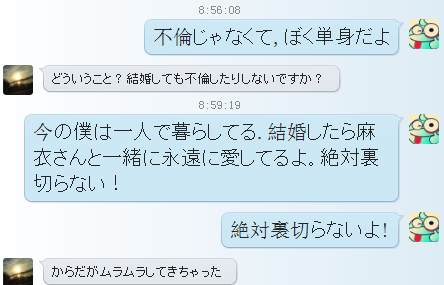
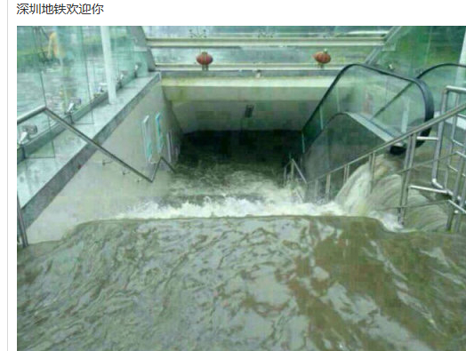
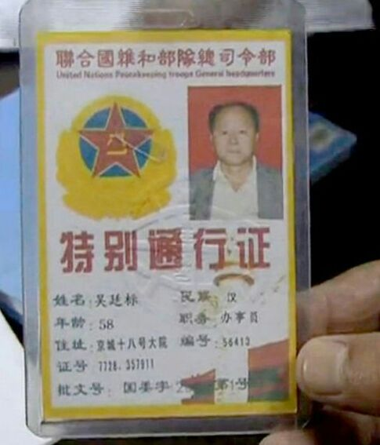
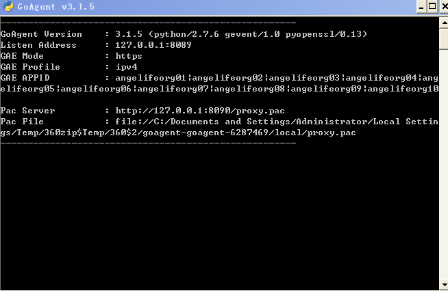

Conversation with 81184027 at Tue 20 May 2014 09:35:01 AM CST on 154115835 (webqq)
(05/20/2014 05:52:52 AM) 安徽-市区&钟馗: http://forum.china.com.cn/forum.php?mod=viewthread&tid=3648380&extra=page%3D1%26filter%3Dtypeid%26typeid%3D850%26typeid%3D850
(05/20/2014 05:52:52 AM) 安徽-市区&钟馗: http://forum.china.com.cn/forum.php?mod=viewthread&tid=3648380&extra=page%3D1%26filter%3Dtypeid%26typeid%3D850%26typeid%3D850
(05/20/2014 07:14:04 AM) 醒悟: :face14:
(05/20/2014 07:43:59 AM) 妮子 雷瑊君: 【给自己点亮一盏心灯】良心是慎独避祸的保护伞。每个人的一生，都可能遇到各种各样的诱惑。面对不良诱惑，要做到慎独不沾，良心就是最后的防线。每当这个时候，如果问一问良心，就会知道，天下没有免费的午餐。良心就像一双锐眼，在洞悉着人们的一言一行。我们每个人，都应当把坚守良心融入到生活常态之中，始终做一个无愧于良心的人。
(05/20/2014 09:01:30 AM) 蔚蓝的天空: 当官的品质富有，老百姓的钱包才能富有。当官的品质贫穷，老百姓的钱包肯定贫穷
(05/20/2014 09:01:47 AM) 安徽-市区&钟馗: :face46:
(05/20/2014 09:05:01 AM) 阿萨汗蛋包飯: 一看就知道郑渊洁的话
(05/20/2014 09:05:35 AM) 阿萨汗蛋包飯: 直白，可惜郑后期的作品不怎么好，渐渐成人化了。早期的作品很经典
(05/20/2014 09:05:38 AM) 蔚蓝的天空: 呵呵
(05/20/2014 09:06:07 AM) 蔚蓝的天空: 是的后期的作品有 性的话题
(05/20/2014 09:07:28 AM) 阿萨汗蛋包飯: 郑早期到后期我都拜读过，后期写的不像童话了。倒是像成人小小说
(05/20/2014 09:07:48 AM) 上善若水: 自从给央视三一五当托之后，名声也搞坏了
(05/20/2014 09:08:22 AM) 蔚蓝的天空: 你说郑渊洁吗
(05/20/2014 09:08:50 AM) 蔚蓝的天空: 搅动污泥只是徒然，浊水不会变清，只会越搅越浑；放任不管，它却会变清，正所谓清者自清。
(05/20/2014 09:09:29 AM) 阿萨汗蛋包飯: 郑的封闭预示着儿童文学的没落。儿童文学渐渐被网络游戏，动漫替代了
(05/20/2014 09:09:44 AM) 阿萨汗蛋包飯: 郑封笔 了
(09:30:57 AM) 醒悟: :face13:
(09:33:34 AM) 醒悟: 包饭干啥工作
(09:34:28 AM) 福建-福州&水浒: 人人都要去的地方:sob:
(09:34:29 AM) 福建-福州&水浒: :face56:
(09:35:01 AM) 醒悟: 喔!想起来了:face12:
(09:36:15 AM) 醒悟: 福建人喜欢出国
(09:36:34 AM) 阿萨汗蛋包飯: 呵呵，是的
(09:37:05 AM) 醒悟: 还想去天国:face13:
(09:37:06 AM) 阿萨汗蛋包飯: 出国成风，特别是福清、长乐
(09:37:25 AM) 醒悟: 去打工
(09:37:31 AM) 福建-福州&水浒: :face56:
(09:37:17 AM) 光: 长乐 也出过优秀的人才，比如蒋勋
(09:38:15 AM) 阿萨汗蛋包飯: 日本有福清帮。我福清的同学都在日本打工
(09:38:16 AM) 福建-福州&水浒: 冰心
(09:38:01 AM) 光: 嗯
(09:38:23 AM) 福建-福州&水浒: 林觉民，
(09:38:42 AM) 阿萨汗蛋包飯: 还有林则徐呢。
(09:38:46 AM) 福建-福州&水浒: 导演陈凯歌祖籍地
(09:38:47 AM) 醒悟: 黑帮?
(09:39:15 AM) 福建-福州&水浒: 林则徐是福建候官人（现福州闽侯县）
(09:39:36 AM) 醒悟: 导演就算了拉皮条的:D
(09:39:45 AM) 福建-福州&水浒: :L
(09:39:51 AM) 阿萨汗蛋包飯: 林则徐的雕像矗立在白湖亭附近
(09:40:02 AM) 福建-福州&水浒: 还在
(09:40:19 AM) 阿萨汗蛋包飯: 嗯，地铁在施工。雕像还矗立着
(09:40:21 AM) 福建-福州&水浒: 不久的将来或许被拆除
(09:40:27 AM) 醒悟: 林大人是人物
(09:40:35 AM) 福建-福州&水浒: 在讨论中
(09:40:54 AM) 福建-福州&水浒: 是说我？:D
(09:41:08 AM) 醒悟: 搬走拆了可惜
(09:41:24 AM) 蔚蓝的天空: 敌我之间的矛盾是对抗性的矛盾。人民内部的矛盾，在劳动人民之间说来，是非对抗性的；在被剥削阶级和剥削阶级之间说来，除了对抗性的一面以外，还有非对抗性的一面。
(09:41:44 AM) 光: http://pan.baidu.com/share/link?shareid=3620331765&uk=607923679
(09:44:41 AM) 光: 农民假冒联合国高官 到监狱欲提走服刑堂弟 2014-05-19 18:32:52
来源：新华网
核心提示： 两名“联合国官员”突然到访湖南省岳阳监狱严管监区，目的是为了提走在押罪犯林某，为其办理保外就医。当遭质疑时，对方竟掏出手机拨通“中南海”电话，严令监狱立马放人……
“联合国高官”来访 欲提走服刑犯
“杨海波是哪位?请让他快来见我们!”5月17日下午4点35分，一高一矮两名中年男子派头十足径自走进岳阳监狱严管监区办公室，开口便道。此时，该监区监区长杨海波正在监区办公室值班。
当 得知眼前之人便是杨海波，其中一名男子立刻从挎包里拿出四份文件递给他。杨海波定睛一看，文件上分别印着《关于请求将林某某保外就医回家赡养慈母体弱多病 的申请报告的回复》、司法部、最高人民检察院、公安部关于印发《罪犯保外就医执行办法》的通知、《中华人民共和国老年人权益保障法》、《中华人民共和国环 境保护法》、《关于请求将林某某保外就医回家赡养慈母体弱多病的申请报告》。
“我们是专门来提你单位罪犯林某某保外就医回家的，这里还有 中华人民共和国最高领导人的亲笔回复，请立即将林某某交给我们带走!”不等杨海波看完材料，对方语气强硬地表明了来意。“这份《关于请求将林某某保外就医 回家赡养慈母体弱多病的申请报告的回复》，是给你们留着备用的。”
看着这些“红头文件”，从警近20年的杨海波心头陡生疑窦：“既然这般来头为什么自己没有接到监狱任何通知?为什么要出示《中华人民共和国环境保护法》?”一边虚与委蛇，一边仔细观察，杨海波发现对方神情急迫，言行举止极像骗子。
“我 们是保密单位，不能随便透露身份信息。”当杨海波要求查看对方相关证件时，其中一名高个子显得极其气恼，。“没有证件我怎么相信你们呢?”听到杨海波这样 说后，高个子才极不情愿地从怀中拿出两个证件。一个证件上面写着《联合国维护部队总司令部特别通行证》、一个上面写着《全世界维护世界和平联合联络工作 证》，姓名均为吴某某，职务分别是办事员和专员。而接下来问到另一名矮个子林某的证件时，对方却拿不出来。“他出来得急，没有带。”吴某某语气生硬地回 复。见此，杨海波更加肯定了对方是诈骗犯罪分子。
民警机智周旋 擒获诈骗嫌疑人
由于办公室里只有自己一人，杨海波想到必须稳住对方，于是热情地给他们泡茶，并说：“今天是周末，你们提人需要监狱开一个通知给我，现在科里办事的人没在，我先给他们打电话帮你们联系一下。”
为 了防止对方逃跑，杨海波一边不动声色地当着他们的面与当天正在监狱巡逻的狱政科赵红打电话，先将提人的情况详细说了一遍。随后，又假装到门口倒水，趁机在 电话里小声地告诉他这是两个骗子，请求支援。回到座位上后，他继续与这两人周旋，以拖住对方，并将情况向监狱长龚跃、政委裘冰可及副监狱长刘伟汇报。龚跃 得知情况后，迅速指派人员赶往监区。
十几分钟过后，两名“联合国官员”见还没来人，开始起疑，并向外走。杨海波担心其逃跑便一直跟着，并要他们在办公室耐心等待。
趁吴某某上厕所时，杨海波迅速来到监区大门叫来值班干警郭观永，把情况简单讲了后，留另一名当班民警在监内值班，稳定监内情况，不允许任何罪犯打亲情电话，以封锁监内罪犯与外界的一切联系，并严密监控罪犯林某某，同时叫郭观永出来协助自己，一人盯一个。
下午5点10分左右，派出所和教育科民警先后赶到，杨海波立即跟他们介绍了情况。此时，林某感觉情况异常便想开溜，但被民警当即追回并控制。在得知他们还有一台车停在三监区门口，车上还有一名司机时，民警随后又将司机控制并带过来，同时通知武警支援。
5点13分左右，正在监狱总值班室值班的纪委副书记易丰玉、驻队武警和狱政科李世军科长赶到，并详细了解情况。这时，吴某某将自己通话的手机(声称是中央来的电话)拿给李世军接，并出示他与多名党和国家领导人的合影，态度非常强硬地要求无条件放人。
此后，民警立即将情况向省监狱局汇报，省局指示立即将吴某某两人控制。民警先后对吴某某和林某进行了询问笔录，同时向君山区公安分局报警，武警大队也赶到现场进行警戒。
当晚7点40分，君山公安分局民警将两名犯罪嫌疑人带走作进一步调查。
为救堂弟 农民请“能人”演戏
据 审讯交代，吴某某两人均系湖南省湘西自治州花垣县农民，其中矮个子林某现年66岁，为罪犯林某某的堂兄，因林某某父母年事已高，身体多病，他便想帮助林某 尽快走出监狱。经人介绍，林某认识了“关系硬、路子广、能办事”的现年58岁的高个子老乡吴某某，于是便请他帮堂弟办理保外就医手续，事成后支付报酬。此 后，吴某某就在黑市上制造了上述假证件、假文件。于是，接下来就有了本文开头的那一幕。
吴某某两人本想瞒天过海提走林某某，但这般伎俩无 异于异想天开，最终把自己栽了进去。杨海波说，他听到两人自我介绍时，就感觉到疑点众多：一是提押罪犯必须有上级主管部门的正式通知，并由人民警察执行; 二是办理罪犯保外就医应该履行法定的程序，逐级申报批准;三是该男子出示的联合国官员工作证件和国家领导人签署的批复文件漏洞众多;四是两名男子提犯心情 非常急迫。
在“闹剧”上演过程中，吴某某见势不妙，曾数次以“向中南海领导打电话”相要挟，并拨通所谓“中央某领导”的电话，要求在场的监狱领导接，显得有恃无恐。但随着一个又一个假招被拆穿，最后骗局彻底败露，吴某某和林某才不得不承认自己的犯罪事实。
(09:44:49 AM) 光: http://site.douban.com/204265/widget/notes/12556419/note/352138384/
(09:45:06 AM) 光: “我 们是保密单位，不能随便透露身份信息。”当杨海波要求查看对方相关证件时，其中一名高个子显得极其气恼，。“没有证件我怎么相信你们呢?”听到杨海波这样 说后，高个子才极不情愿地从怀中拿出两个证件。一个证件上面写着《联合国维护部队总司令部特别通行证》、一个上面写着《全世界维护世界和平联合联络工作 证》，姓名均为吴某某，职务分别是办事员和专员。而接下来问到另一名矮个子林某的证件时，对方却拿不出来。“他出来得急，没有带。”吴某某语气生硬地回 复。见此，杨海波更加肯定了对方是诈骗犯罪分子。
(09:47:36 AM) lost message from #107493 to #107498
(09:47:56 AM) 蔚蓝的天空: 像文化大革命这样的政治运动要“七八年再来一次”:D
(09:49:38 AM) 福建-福州&水浒: 好好再来一次，肯定亡国啊:憨笑:
(09:49:58 AM) 福建-福州&水浒: 举手表决:punch:
(09:50:54 AM) 蔚蓝的天空: 民靠我们去组织，中国的反动分子，靠我们组织起人民去把他打倒。凡是反动的东西，你不打，他就不倒。这也和扫地一样，扫帚不到，灰尘照例不会自己跑掉。
(09:51:16 AM) 蔚蓝的天空: :D
(09:52:35 AM) 蔚蓝的天空: 蛇不让它出来怎么能捉它？我们要叫那些王八蛋出来唱戏，在报纸上放屁，长长他们的志气。然后让人民看清楚，人民就认识他了。我们是一逼一捉，一斗一捉，城里捉，乡里斗，好办事。
(10:01:59 AM) 蔚蓝的天空: 智慧都是从群众那里来的。我历来讲，知识分子是最无知识的。这是讲得透底。知识分子把尾巴一翘，比孙行者的尾巴还长。孙行者七十二变，最后把尾巴变成个旗杆，那么长。知识分子翘起尾巴来可不得了呀！“老子就是不算天下第一，也算天下第二”。“工人、农民算什么呀？你们就是‘阿斗'，又不认得几个字”。但是，大局问题，不是知识分子决定的，最后是劳动者决定的，而且是劳动者中最先进的部分，就是无产阶级决定的。
(10:02:03 AM) 阿萨汗蛋包飯: 土豪用人奶养颜 慈禧的宫廷养颜秘方
(10:02:36 AM) 福建-福州&水浒: :L
(10:02:49 AM) 福建-福州&水浒: :g:g:g呃
(10:13:03 AM) 阿萨汗蛋包飯: 日本鬼子说话一会儿简体一会儿敬体
(10:14:02 AM) 福建-福州&水浒: 你还会日语？
(10:14:43 AM) 阿萨汗蛋包飯: 嗯，交了两个日本朋友。好多年了，一直找我聊。
(10:15:07 AM) 福建-福州&水浒: 你日语在哪学的呀
(10:15:41 AM) 阿萨汗蛋包飯: 要知道，在海外，我们这种黄种人说中国话很危险的。说日语受尊敬
(10:15:57 AM) 福建-福州&水浒: :L:憨笑::憨笑:
(10:16:38 AM) 福建-福州&水浒: 你学习日语多少年了？？
(10:17:29 AM) 阿萨汗蛋包飯: 2003年学得至今十年多了。坚持用日文写文章，要不然早生疏了。
(10:17:48 AM) 福建-福州&水浒: :强:
(10:18:11 AM) 福建-福州&水浒: 看来你去日本混的好:blush:
(10:19:10 AM) 阿萨汗蛋包飯: 我用日文写的文章有很厚的十本。不发表，自己留着看。在国内也能学得，不是要非得出国学。
(10:19:25 AM) 上善若水: :强:
(10:19:36 AM) 福建-福州&水浒: :强:
(10:20:47 AM) 光: 可以自己做一个个人博客么
(10:21:45 AM) 阿萨汗蛋包飯: 呵呵，博客怕是没什么人去看，再说国人反日情绪严重。
(10:21:30 AM) 光: 没事
(10:22:02 AM) 福建-福州&水浒: :)
(10:21:45 AM) 光: 你可以去日本网站申请
(10:21:50 AM) 光: 应该也有
(10:22:21 AM) 福建-福州&水浒: 有容乃大
(10:26:10 AM) 阿萨汗蛋包飯: 再说写给日本人看的，会有人给我留言，我渐渐把这种平时用不到的语言书面化了，我一直有关注日文网站上关于国内消息的评论。
(10:26:57 AM) 光: http://atpages.jp/
(10:27:07 AM) 光: http://www.xrea.com/
(10:27:11 AM) 光: 我找了两个
(10:27:16 AM) 光: 你试试看
(10:27:57 AM) 阿萨汗蛋包飯: 嗯，我注册下
(10:27:41 AM) 光: 嗯
(10:49:04 AM) 醒悟: 你写神学啊:D
(10:53:56 AM) 阿萨汗蛋包飯: 刚写完，日本人真直白。
(10:54:17 AM) 福建-福州&水浒: X-)
(10:54:29 AM) 福建-福州&水浒: 日本人慷慨么？
(11:09:13 AM) 醒悟: 日本人台湾仔最小气:D
(11:10:20 AM) 醒悟: 包饭去日本拍Av
(11:11:41 AM) 福建-福州&水浒: :O醒悟的思想太龌龊了，埃
(11:16:14 AM) 醒悟: :D
(11:18:47 AM) 醒悟: 曰语日本人之语日日之语;-)
(11:19:34 AM) 阿萨汗蛋包飯: 注册个博客太麻烦
(11:19:43 AM) 阿萨汗蛋包飯: 填那么多个人信息:L
(11:19:39 AM) 光: http://www.freehao123.com/xrea/
(11:19:44 AM) 光: 我已经注册成功了
(11:19:47 AM) 光: 正在调试
(11:20:04 AM) 光: 你按这个流程走
(11:20:39 AM) 阿萨汗蛋包飯: 重新填写，我也在注册中。:L
(11:20:25 AM) 光: 嗯
(11:28:31 AM) 潮哥: 一个号称经济实力雄踞全球第二的国度，对自己正遭受他国凌侮涂炭的同胞，仅仅停留对外口头抗议、对内封锁消息的层次，不由人不怀疑执政者的真正居心到底是什么。
(11:29:22 AM) 蔚蓝的天空: 心碎乌托邦
:O醒悟的思想太龌龊了，埃
(11:30:49 AM) 福建-福州&水浒: @蔚蓝的天空 有什么问题么的
(11:31:28 AM) 蔚蓝的天空: 醒悟说的是真话
(11:32:32 AM) 福建-福州&水浒: :L
(11:32:41 AM) 蔚蓝的天空: 呵呵
(11:32:44 AM) 潮哥: 当越南爆发大规模排华时，中共领导人就应该公开站出来发表声明施压，而不是只由外交部发言人这种低级官员出面，同时启动经济制裁工作和撤侨工作，中共军队进入二级战备。如果越方仍然一意孤行，任由暴民胡作非为，中共军将以保护侨民为由兵发河内。类似的做法，美国、法国早有先例，中国为何不学呢？
(11:33:56 AM) 醒悟: 不想打
(11:34:35 AM) 潮哥: 当今个执政者连晚清都不如
(11:34:39 AM) 蔚蓝的天空: 11:10:20
醒悟
2014/5/20 11:10:20
包饭去日本拍Av
(11:34:50 AM) 蔚蓝的天空: :D
(11:35:02 AM) 醒悟: 死的不是习大大亲人:D
(11:35:42 AM) 蔚蓝的天空: 刚说你两句又不招调了
(11:36:26 AM) 醒悟: 是的!死的百姓不值钱
(11:36:12 AM) lost message from #107567 to #107567
(11:36:32 AM) 蔚蓝的天空: 请相信本届政府
(11:36:32 AM) 潮哥:
(11:37:38 AM) 阿萨汗蛋包飯: 政府不作为
(11:38:41 AM) 潮哥: 相信个鸡巴毛
(11:39:01 AM) 醒悟: 本政府以挣钱为根本发展为硬道理!死几个当为国牺牲了
(11:41:42 AM) 潮哥: 云南男子驾车给政府送花圈 遭特警12枪击毙
(11:42:18 AM) 阿萨汗蛋包飯: :emoji:
(11:42:35 AM) 阿萨汗蛋包飯: 送花圈被击毙？
(11:42:45 AM) 憧憬￠未来: :dig:
(11:42:54 AM) 醒悟: 真的吗:!
(11:43:33 AM) 潮哥: 是啊 用货车围住镇政府大门，挥舞马刀，
(11:43:38 AM) 潮哥: 没有伤害人，被击毙
(11:43:52 AM) 阿萨汗蛋包飯: :emoji:
(11:43:57 AM) 醒悟: 问题是刀
(11:45:20 AM) 潮哥: 你还长了个小弟弟，就说明你一定要去强奸吗
(11:46:08 AM) 憧憬￠未来: 这句强悍。。
(11:46:34 AM) 福建-福州&水浒: 暴力啊
(11:46:39 AM) 憧憬￠未来: 在美女面前勃起也不能叫强奸吧。。
(11:46:51 AM) 潮哥: 是啊
(11:46:53 AM) 福建-福州&水浒: ～～～
(11:47:15 AM) 醒悟: 等杀了就晚了
(11:47:39 AM) 憧憬￠未来: 人家还没杀呢 又不是打算杀人。。
(11:47:45 AM) 潮哥: 要杀人不会在那装腔作势
(11:47:50 AM) 憧憬￠未来: 挥舞刀子而已
(11:47:56 AM) 醒悟: 最要最近中国事出的太多了
(11:48:14 AM) 憧憬￠未来: 又不是火车站砍人 只耍把式不玩真的
(11:48:29 AM) 潮哥: 是啊 是为了抗议镇政府
(11:48:32 AM) 蔚蓝的天空: 林子大 鸟多 事多也正常
(11:48:41 AM) 潮哥: 特警怎么不去越南杀去
(11:48:53 AM) 憧憬￠未来: 这么说 以后所有的群体事件都能当成疆独份子枪毙么？
(11:49:17 AM) 憧憬￠未来: 不能说这一段特殊事情多就敏感 但是 也要看对象啊 就本镇的人 去镇门口扛起
(11:49:19 AM) 潮哥: 唉，悲催的国度，可怜的人民
(11:49:19 AM) 憧憬￠未来: 抗议
(11:49:23 AM) 憧憬￠未来: 没那么暴力。。
(11:49:24 AM) 憧憬￠未来: 哎。
(11:49:31 AM) 憧憬￠未来:
(11:49:33 AM) 蔚蓝的天空: 越南会成为中华人民共和国的自治区 请相信本届政府
(11:49:34 AM) 潮哥: 人家又没有戴白帽
(11:49:39 AM) 醒悟: 说明一间题不能吓别人要么杀
(11:49:40 AM) 潮哥: 相信你没
(11:50:01 AM) 福建-福州&水浒: 请相信本届政府
(11:50:21 AM) 蔚蓝的天空: 日本会成为中国的特别行政区
(11:50:44 AM) 潮哥:
(11:50:56 AM) 福建-福州&水浒: :D
(11:51:23 AM) 阿萨汗蛋包飯: :face64::face64::face64:别意淫了，吃米饭去
(11:51:39 AM) 憧憬￠未来: 今天真热。。
(11:51:45 AM) 醒悟: 以后不满的直接杀进去:D
(11:51:47 AM) 憧憬￠未来: 你们那都热不
(11:52:04 AM) 醒悟: 冷
(11:52:18 AM) 憧憬￠未来:
(11:52:26 AM) 憧憬￠未来: 你哪里的？
(11:52:46 AM) 蔚蓝的天空: 本届政府现在主要的工作是反腐 和反恐
(11:53:08 AM) 蔚蓝的天空: 先解决人民内部矛盾
(11:53:26 AM) 蔚蓝的天空: 攘外必先安内
(11:54:50 AM) 潮哥:
(11:54:51 AM) 潮哥: 而活
(11:54:53 AM) 潮哥: 二货
(11:55:31 AM) 蔚蓝的天空: 二货也不是谁都能做
(11:56:42 AM) 憧憬￠未来: 
(11:56:49 AM) 憧憬￠未来: 吃饭去哈
(11:56:59 AM) 光: http://angelife.s602.xrea.com/ @阿萨汗蛋包飯
(11:57:03 AM) 光: 我已经好了
(11:57:12 AM) 光: s601不行
(11:57:17 AM) 光: 602可以
(11:57:47 AM) 蔚蓝的天空: 国内局势稳定以后 习大大会领着三千万光棍搞扩张
(11:58:05 AM) 憧憬￠未来: 包饭吃米饭去了:dig:
(11:59:45 AM) 蔚蓝的天空: :face64:
(12:00:38 PM) 憧憬￠未来: 一会吃馒头去
(12:23:04 PM) 醒悟: 上海
(12:28:19 PM) 蔚蓝的天空: 酒足饭饱 准备开战
(12:31:05 PM) 福建-福州&水浒: :D
(12:46:01 PM) 醒悟: 8-)这群女士太少
(12:49:55 PM) 光: 被你发现了
(12:50:50 PM) 光: 目测女性占比例1／3
(12:51:55 PM) 潮哥: :D
(12:51:44 PM) 光: :face14:
(12:53:57 PM) 潮哥:
(12:58:11 PM) 福建-福州&水浒:
(01:01:48 PM) 潮哥: 论被江泽民白送的领土能否收回
(01:07:47 PM) 福建-福州&水浒: 没戏
(01:09:06 PM) 醒悟: 嫖娼拉动内须
(01:09:08 PM) 潮哥: 中国为俄国的〝友好〞和〝联手〞付出了极为惨重的代价，永久丧失了320万平方公里的辽阔疆土;使东三省脱离中国达半个世纪之久，直接播下了日本全面侵华的种子。
来自俄国的灾难还远没有完结!
(01:10:14 PM) 醒悟: 东三省?不是在国内吗?
(01:10:22 PM) 潮哥: 从1858年到1883年的28年间，俄国打着〝友好互助〞的旗号，利用大清官府〝逢西必反〞的病态心理玩〝中俄联手〞，攫取了中国161万平方公里的锦绣河山。
更大的灾难还在后边。
1900年义和团乱华期间，八国联军攻陷北京。俄国再度向中共政府表示〝友好〞，率先撤军回国。当中国官民对俄国人感激零涕时，俄国突然出动20万大军大举入侵东北地区，全面占领东三省，并在海兰泡和江东六十四屯制造了惨绝人寰的大屠杀。数万无辜平民被俄军刀砍斧劈，或直接推入黑龙江淹死。
(01:11:13 PM) 福建-福州&水浒: :!
(01:12:43 PM) 醒悟: 东北的汉不是给日干，就给俄干
(01:12:55 PM) 福建-福州&水浒: 中国，美国，前苏联（俄罗斯）关系是，男人，女人，小三
(01:14:28 PM) 潮哥:
(01:15:08 PM) 福建-福州&水浒: 这种关系太复杂了，夫妻太好，小三不干了，男人与小三好，女人又不愿意了
(01:18:03 PM) 潮哥: 现在正是俄罗斯困难阶段，赶紧把领土收回来
(01:18:31 PM) 醒悟: 男人有钱就有女人?先强大是对的
(01:19:37 PM) 醒悟: 与俄国斗中国真的四面楚歌啦
(01:19:59 PM) 潮哥: 苏联解体的时候就应该收回来外蒙
(01:20:13 PM) 潮哥: 俄罗斯才是中国最大的敌人
(01:20:18 PM) 福建-福州&水浒: 而美国就充当小三，骗取男人的钱，
(01:20:32 PM) 醒悟: 那时是可以
(01:20:43 PM) 福建-福州&水浒: 男人也傻傻的被套牢了
(01:21:03 PM) 潮哥: 是啊
(01:21:09 PM) 潮哥: 傻逼，当政者
(01:21:11 PM) 醒悟: 俄解体看来对中国也是好事
(01:21:24 PM) 福建-福州&水浒: 这回妻子又假装正义安抚男人
(01:22:15 PM) 醒悟: 最近西方压俄
(01:22:19 PM) 福建-福州&水浒: 从清政府开始，美国，中国，俄罗斯，就是这种关系
(01:22:40 PM) 潮哥:
(01:23:12 PM) 醒悟: 互相帮助，最主要靠自我强大
(01:23:17 PM) 福建-福州&水浒: 我路德这个必须非常恰当
(01:23:20 PM) 福建-福州&水浒: 觉得
(01:25:27 PM) 醒悟: 中俄一个完了，美国更疯狂亚洲就是她奴力啦
(01:25:46 PM) 潮哥: 美国没占你的一寸领土吧
(01:26:17 PM) 潮哥: 基于政权体制不一样，美国肯定要打击兲朝的
(01:26:28 PM) 潮哥: 俄罗斯占了多少
(01:27:13 PM) 福建-福州&水浒: 王八
(01:27:19 PM) 福建-福州&水浒: 这个字怎么读
(01:27:34 PM) 潮哥: 天
(01:28:29 PM) 蔚蓝的天空: 美国最怕中国强大
(01:29:09 PM) 阿赑: 中国人这么多，怎么强大？
(01:29:26 PM) 蔚蓝的天空: 哈哈
(01:29:57 PM) 蔚蓝的天空: 人多才能建立更多的自治区
(01:30:03 PM) 潮哥: 又不是冷兵器时代
(01:30:10 PM) 蔚蓝的天空: 呵呵
(01:30:39 PM) 福建-福州&水浒: 没事，需要打战军人不够用有天空这样的预备役人员
(01:31:04 PM) 阿赑: 贪官，异教徒 总和比美国人还多 强大？比鸡鸡长短都不一定赢
(01:31:20 PM) 福建-福州&水浒: 以天空能力，一人可以干五个美国佬
(01:32:16 PM) 醒悟: 现在都导弹一打百姓苦啦!死的不一定是军人
(01:32:23 PM) 阿赑: 哈哈，碰见兰博就麻烦了
(01:33:30 PM) 阿赑: 哈哈，不一定呢，高价值的不是民用设施
(01:33:42 PM) 潮哥: 默克尔送地图提醒中共 不要敌我不分与北方强盗为伍
(01:35:07 PM) 醒悟: 克尔是谁，政治上没朋友只是互相利用
(01:35:10 PM) 阿赑: 嗯 狠狠地给小习同学一巴掌
(01:35:47 PM) 阿赑: 好歹可以利用 就怕没有一点用
(01:36:20 PM) 蔚蓝的天空: 先把越南搞定 然后把中国人口调过去五千万 以建设兵团长期驻扎
(01:37:07 PM) 蔚蓝的天空: 建立越南特别行政区
(01:37:27 PM) 阿赑: 省省吧 中国谁都干不过
(01:37:43 PM) 阿赑: 一动手 就怕乱
(01:37:46 PM) 醒悟: 越南，还是干日本
(01:38:16 PM) 蔚蓝的天空: 和中国接壤全部变成特别行政区 向我天朝年年进贡
(01:38:27 PM) 阿赑: 一乱就怕出英雄 一-出英雄 党就头痛
(01:38:30 PM) 福建-福州&水浒: 我个人觉得看AV产业比较靠谱
(01:39:08 PM) 阿赑: 赌博 可以大西北
(01:39:11 PM) 阿赑: 发展
(01:39:31 PM) 福建-福州&水浒: 想来个性攻略日本女人，培养中日二代，在洗脑，用杂交品种拖垮日本
(01:39:46 PM) 福建-福州&水浒: 那时候就不用打战了
(01:40:18 PM) 阿赑: 你的意思 我们的品种品质不好？
(01:40:33 PM) 福建-福州&水浒: 一举两得，呵呵好吧我意淫了
(01:40:45 PM) 阿赑: 杂交的更差？
(01:40:51 PM) 蔚蓝的天空: 中国将成为亚洲第一霸主
(01:41:02 PM) 福建-福州&水浒: 不是不好是太好了，主要培养二代洗脑从娃娃抓起
(01:41:49 PM) 阿赑: 洗脑找党呀.十几亿老百姓的脑子洗的不错
(01:42:07 PM) 潮哥: 二货五毛
(01:42:19 PM) 福建-福州&水浒: 学学全能组织的发展模式，他们从基层开始发展，对待杂交品种从娃娃抓起
(01:42:22 PM) 阿赑: 现在新疆派去的村官不就是洗脑专家么
(01:42:22 PM) 蔚蓝的天空: 美国在运用毛泽东思想和中国对抗 凡事中国政府反对美国就支持
(01:43:34 PM) 福建-福州&水浒: 大学生村官也是再洗脑啊
(01:43:40 PM) 福建-福州&水浒: 二次栽培
(01:43:44 PM) 阿赑: 嘿 必须牵制
(01:44:10 PM) 福建-福州&水浒: 哈哈，洗脑无处不在啊
(01:44:22 PM) 阿赑: 那些村官是洗脑的牺牲品
(01:44:33 PM) 福建-福州&水浒: :)对头
(01:45:01 PM) 阿赑: 专洗少数民族 娃娃的脑
(01:45:04 PM) 福建-福州&水浒: 看到一些地方，村官领不到工资，没有正式编制
(01:45:21 PM) 阿赑: 洗不了你的 我洗你娃娃的
(01:45:25 PM) 蔚蓝的天空: 言下之意 你是支持新疆独立
(01:45:30 PM) 福建-福州&水浒: :憨笑:
(01:45:35 PM) 蔚蓝的天空: 你是支持疆独分子
(01:45:49 PM) 阿赑: 合久必分
(01:45:51 PM) 福建-福州&水浒: 呃呃呃
(01:46:06 PM) 蔚蓝的天空: 企图分裂我大红龙帝国
(01:46:21 PM) 福建-福州&水浒: DHL帝国
(01:46:46 PM) 蔚蓝的天空: 分那是二百年之后的事
(01:46:58 PM) 阿赑: 闹闹 好，还知道人民张着嘴 一双手
(01:47:02 PM) 蔚蓝的天空: 现在想分裂的人只能意淫
(01:47:07 PM) 阿赑: 不然 完蛋了
(01:47:28 PM) 蔚蓝的天空: 我天朝正逢盛世
(01:47:42 PM) 福建-福州&水浒: 共产党万岁
(01:47:46 PM) 阿赑: 联邦好
(01:47:52 PM) lost message from #107742 to #107742
(01:48:11 PM) 阿赑: 共产党
(01:48:02 PM) 蔚蓝的天空: 虽然有几个调皮捣蛋的 但是不足为患
(01:48:15 PM) 阿赑: 万岁
(01:48:31 PM) 阿赑: 有吃有喝
(01:48:52 PM) 福建-福州&水浒: 嗯嗯共产党万岁
(01:49:09 PM) 阿赑: 不对呀
(01:49:13 PM) 福建-福州&水浒: 打倒美帝国主义，
(01:49:25 PM) 阿赑: 万岁的 都挂的早
(01:49:35 PM) 阿赑: 你是坏人
(01:49:35 PM) 福建-福州&水浒: 对不起我回到1960年代了:[
(01:49:48 PM) 蔚蓝的天空: 自信人生二百年
(01:49:56 PM) 阿赑: 我要举报你
(01:49:59 PM) 潮哥: 帝国主义都是纸老虎
(01:50:03 PM) 福建-福州&水浒: 哪有什么万岁啊
(01:50:15 PM) 醒悟: 新彊人太野蛮了!让他们杀越南去
(01:50:20 PM) 福建-福州&水浒: 简直胡扯淡
(01:50:22 PM) 蔚蓝的天空: 一切反动派都是纸老虎
(01:50:39 PM) 蔚蓝的天空: 是精神万岁
(01:50:52 PM) 福建-福州&水浒: 天空被洗脑的太厉害了，军人嘛可以理解
(01:51:15 PM) 福建-福州&水浒: 大家有什么意见么？
(01:51:24 PM) 阿赑: 陆军 还是武警
(01:52:04 PM) 阿赑: 武警是土匪 国防军我喜欢
(01:52:16 PM) 福建-福州&水浒: 为了民族复兴，国家需要天空
(01:52:29 PM) 蔚蓝的天空: @阿赑 此话怎讲
(01:52:44 PM) 蔚蓝的天空: 什么叫武警是土匪
(01:53:02 PM) 阿赑: 防火防盗防武警
(01:53:12 PM) 蔚蓝的天空: 抢险救灾的时候你怎么不说是土匪
(01:53:13 PM) 福建-福州&水浒: :撇嘴:
(01:53:38 PM) lost message from #107770 to #107773
(01:53:48 PM) 阿赑: 哦 看来你是武警出生了
(01:53:31 PM) 蔚蓝的天空: 你家着火的时候 不是消防武警去救
(01:53:38 PM) lost message from #107775 to #107775
(01:53:54 PM) 蔚蓝的天空: 5月20日，2014年的第141天。
天天主恩惠,福满溢灵程!
愿我们收获活水吗哪，对神发出感谢赞美
旧约 撒上 27：-28:
诗 119:33-64
箴 15:24-25
新约 约 12:37-50这是什么东东
(01:53:30 PM) 福建-福州&水浒: 天空被洗脑的太厉害了，军人嘛可以理解
(01:53:52 PM) 潮哥: 五毛，签订完毕
(01:53:18 PM) pastorqi: 5月20日，2014年的第141天。
天天主恩惠,福满溢灵程!
愿我们收获活水吗哪，对神发出感谢赞美
旧约 撒上 27：-28:
诗 119:33-64
箴 15:24-25
新约 约 12:37-50
(01:54:08 PM) 福建-福州&水浒: 为了民族复兴，国家需要天空
(01:54:30 PM) 蔚蓝的天空: 忘恩负义
(01:53:46 PM) 潮哥:
(01:54:51 PM) 阿赑: 消防员我觉得还是职业化比较好
(01:55:05 PM) 蔚蓝的天空: @心碎乌托邦 民族已经复兴
(01:55:29 PM) 醒悟: 以后打越南就要军队把越南女肚子全干大生下来在走，以后越南在干中国等于干他爸
(01:56:04 PM) 蔚蓝的天空: 醒悟 不错:D
(01:56:06 PM) 阿赑: 泰国 越南 女人我见了就
(01:56:16 PM) 阿赑: 阳痿
(01:56:48 PM) 阿赑: 感觉这两个国家的人 没进化完成
(01:57:10 PM) 蔚蓝的天空: 世界是你们的，也是我们的，但归根结底是你们的。你们青年人朝气蓬勃，就好像早上八九点钟的太阳，希望寄托在你们身上。
(01:57:48 PM) 阿赑: 赵老板说的？
(01:57:58 PM) 福建-福州&水浒: :p
(01:58:01 PM) 蔚蓝的天空: 独坐池塘如虎踞，绿荫树下养精神。春来我不先开口，哪个虫儿敢作声？
(01:58:15 PM) 蔚蓝的天空: 惜秦皇汉武，略输文采。唐宗宋祖，稍逊风骚。一代天骄，成吉思汗，只识弯弓射大雕。俱往矣，数风流人物，还看今朝。
(01:58:39 PM) 潮哥:
(02:00:08 PM) 醒悟: 越南可以，泰国总理:B
(02:00:54 PM) 福建-福州&水浒: 天空属被政治洗脑
(02:01:11 PM) 蔚蓝的天空: 庙小妖风大，池浅王八多。
(02:01:32 PM) 蔚蓝的天空: 提高警惕，保卫祖国
(02:01:34 PM) 福建-福州&水浒: 还是个人崇拜的一种
(02:02:36 PM) 蔚蓝的天空: 一个高尚的人，一个纯粹的人，一个脱离了低级趣味的人。
(02:03:43 PM) 蔚蓝的天空: 要允许学生上课看小说，要允许学生上课打磕睡，要爱护学生身体。教员要少讲，要让学生多看。我看你讲的这个学生，将来可能有所做为。他就敢星期六不参加会，也敢星期日不按时返校。回去以后，你就告诉这学生，八、九点钟回校还太早，可以十一点、十二点再回去。
(02:05:06 PM) lost message from #107799 to #107799
(02:05:26 PM) 蔚蓝的天空: :D
(02:05:47 PM) 蔚蓝的天空: 秦始皇算什么？他只坑了四百六十个儒，我们坑了四万六千个儒。我们镇反，还没有杀掉一些反革命的知识分子吗？我与民主人士辨论过，你骂我们秦始皇，不对，我们超过秦始皇一百倍。骂我们是秦始皇，是独裁者，我们一贯承认；可惜的是，你们说得不够，往往要我们加以补充（大笑）。
(02:05:49 PM) 福建-福州&水浒: :[
(02:06:24 PM) 蔚蓝的天空: 知识分子的身体也是不干净的，不但思想不干净。
(02:07:06 PM) 福建-福州&水浒: :d:d:d:d
(02:08:23 PM) 福建-福州&水浒: 当一个人把无知当“真理”，想想真是太可怜了:sob:
(02:09:12 PM) 蔚蓝的天空: 从理智上，上帝根本不存在。基督教这种东西本质上是反理性的，因为基督教教义告诉人们，理智是局限性的是不可靠的，人类不论在任何方面包括哲学科学等等永远不会有人的理智智慧超越耶稣的。不过就算是从情感上，也不能不反对这个教。因为他是天魔教
(02:09:40 PM) 福建-福州&水浒: :D
(02:09:43 PM) 蔚蓝的天空: :D
(02:09:55 PM) 福建-福州&水浒: 唉:pensive:
(02:11:46 PM) 蔚蓝的天空: 另外基督徒常拿爱因斯坦，孙中山，张学良，等等来说事，其实众所周知，爱因斯坦并不是基督徒，爱因斯坦并不相信拟人化的上帝即耶稣，至于后两位只有基督徒认为是基督教徒，也上了基督徒所谓的天堂，只有他们自己知道，反正希望基督徒不要说改革开放的总设计师也是基督徒就好，不能因为他允许基督教在中国传教就说他信基督呀！
(02:14:07 PM) 蔚蓝的天空: 基督教发展到极端就是恐怖活动和宗教战争，并且高呼杀人是多么的正义，是神的授权。
(02:14:13 PM) 蔚蓝的天空: :D
(02:14:21 PM) 潮哥: 二货
(02:18:04 PM) 蔚蓝的天空: 基督教的洪秀全化的可能，因为掌权者的合法性是他们来定义的，条件也是他们所给定的，或者成为帝国主义侵略中国的推手，成为帝国主义着力培养和扶植的对象。
(02:18:36 PM) 福建-福州&水浒: @潮哥我们 早已经把他列入五毛队伍了
(02:18:59 PM) 阿萨汗蛋包飯: 毛泽东在离世前九个月，对来访的基辛格一行三人分别说了一句话：上帝爱你！上帝爱你！上帝爱你！上帝不爱我毛泽东，因为，我毛泽东是好斗的人.
(02:19:55 PM) 蔚蓝的天空: 很多人觉得不信神的人活着就没意义了，就空虚了，就怕死了。在下听过一个基督徒的报道会，一上来就说他们信神以前如何如何空虚寂寞冻，现代人的心灵如何迷失啦，如何需要爱啦……（虽然这跟神是不是存在没啥关系）接下来就几个人上台开始说信神让他们的心灵得到了充实，生活改变了等等。
(02:20:03 PM) 潮哥: 美国为什么要把中国经济搞垮呢?这是中共的反美宣传，中共它本身其实也不真是反美，就是为了欺骗国人，这是他们的伎俩，对内欺骗、壮胆。美国政府还在指望中国继续充当廉价工厂、继续购买美国的国债呢!
(02:20:26 PM) 蔚蓝的天空: 这个教还认为人死了以后要下地狱。并且按照它的理论，咱中国人的列祖列宗包括孔子孟子等人全都被架在地狱的烈火里烧烤着。这么说来咱还真的宁可下地狱好了。（将来若上了天堂，满世界都是高鼻子蓝眼睛的西方人，这不郁闷么，咱英文烂得一塌糊涂）
(02:21:22 PM) 蔚蓝的天空: 面对未知的世界，用神的存在来蒙混过关。面对不可逃避的死亡，用神的存在来自我安慰。面对生活中的种种困难，用神的存在来给自己定心。面对人生的思考，用神的存在来给自己找意义……
(02:21:33 PM) 阿萨汗蛋包飯: 天堂是灵界，不需要语言沟通，那是一种心灵感应
(02:21:39 PM) 蔚蓝的天空: 面对未知的世界，用神的存在来蒙混过关。面对不可逃避的死亡，用神的存在来自我安慰。面对生活中的种种困难，用神的存在来给自己定心。面对人生的思考，用神的存在来给自己找意义……
(02:21:48 PM) 蔚蓝的天空: 面对未知的世界，用神的存在来蒙混过关。面对不可逃避的死亡，用神的存在来自我安慰。面对生活中的种种困难，用神的存在来给自己定心。面对人生的思考，用神的存在来给自己找意义……
(02:21:50 PM) 阿萨汗蛋包飯: 赵钟祥讲了一辈子人与自然，从来没有讲过哪个人是猴变的，也从来没有讲过哪里的猴子变成了人。可见，承认神是不用证明的，而没有神是不能来证明的。
(02:22:20 PM) 蔚蓝的天空: 总之，信这个神可真方便，什么都不要你想，什么都不要你怀疑。你只要相信，然后得到廉价的感动和满足就行了。你不用再去苦苦探求真理，不用再去思索什么人生的意义。你只要信，只要信，只要信。
(02:22:56 PM) 蔚蓝的天空: 这个教认为有一个至高无上的上帝，他创造了我们，并且对我们如何如何好……总之，我对这个上帝的人品（神品）抱有深深的怀疑。
(02:24:42 PM) 蔚蓝的天空: 在美国，那些原教旨主义者枪杀为女性堕胎的医生，火烧医院制造爆炸。
(02:25:56 PM) 阿萨汗蛋包飯: 每周总有一天，叫礼拜天，人们停止工作，为的是让人们纪念神，不要人贪心无度。世界上的伟大政治家，闻名遐尔的科学家、哲学家与神学家的盛名和荣耀，都必将消失。但耶稣：全人类都认识他。
(02:26:07 PM) 蔚蓝的天空: 当中国哲学家季梁2000多年前提出神是人构想出来的、人是神的主的时候，基督教里面的神还没有被犹太民族编造出来。中国的文化，儒教、道教，汉化了的中国佛教，都是引导人得道成神仙、成圣人、成佛陀。这和西方的亚伯拉罕（犹太教、基督教、伊斯兰教）有本质的不同，基督徒永远是神的奴才。
(02:26:46 PM) 蔚蓝的天空: 基督徒永远是神的奴才。
(02:27:19 PM) 阿萨汗蛋包飯: 从狭隘自私的角度才会想到奴才二字。上帝造人，人造奴隶。基督徒是博爱的
(02:27:29 PM) 蔚蓝的天空: 上帝是基督徒奴才的主人，而在中国人的观念中，上帝、上天是民意的代表，是人的仆，服从于民意。换句话说，基督徒就是人的仆人的奴才，人是基督徒的主子的主子。
(02:28:11 PM) 阿萨汗蛋包飯: 神是个灵，与活人同在，你们要爱人如己。
(02:28:43 PM) 蔚蓝的天空: 中国的那些下贱的基督洋教奴们，他们的祖宗肯定不知道什么基督教，他们更早的祖宗还生活在基督教诞生和基督教里面的神被犹太民族创造出来以前（中华民族的历史可比犹太民族的历史长了上千年），基督洋教奴们这些祖宗肯定不会信什么基督教里面犹太民族的的神。那么就是说，这些基督洋教奴们都承认、都相信他们的祖宗是魔鬼的儿子。可见这些基督洋教奴们的无耻、下贱和变态。
(02:28:54 PM) 阿萨汗蛋包飯: 耶稣降生的那天，被定为公元的开始。新中国就采用公元纪年，放弃了民国纪年法
(02:29:12 PM) 蔚蓝的天空: 可见这些基督洋教奴们的无耻、下贱和变态。
(02:29:24 PM) 光: 交流+不同=冲突
(02:30:45 PM) 福建-福州&水浒: 政治洗脑太深
(02:30:54 PM) 福建-福州&水浒: :Z
(02:31:55 PM) 阿萨汗蛋包飯: 我为你洗脚。
(02:32:16 PM) 阿赑: 还能洗什么
(02:33:51 PM) 蔚蓝的天空: 你邪教洗脑太深 我可怜的神奴们、
(02:35:53 PM) 蔚蓝的天空: 我们中国人的祖先用“上帝”这个词汇来表达他们对不可知的终极存在的感悟和敬畏之心，这和犹太人这个人类历史上独一无二的亡国胚民族捏造出来的骗自己也骗全人类的假神耶和华根本就是两回事情。犹太人这个独一无二的亡国胚民族实际上就是上帝安排的中国人在文化上的终极敌人，这个独一无二的亡国胚民族打着上帝旗号招摇撞骗的亡国胚表演实际上向整个人类提出了终极存在（上帝）究竟是什么以及终极存在（上帝）和人究竟是什么关系这个关系到人类终极命运的终极问题。
(02:42:42 PM) 阿萨汗蛋包飯: 四川地震2008+5+12=2025；日本地震2011+3+11=2025；马航飞机失踪2014+3+8=2025，真的只是巧合么？ 2025代表灾难数字。
(02:48:51 PM) 醒悟: :D
(02:49:37 PM) 醒悟: 基督徒在中国是可怜，不合国情
(02:52:10 PM) 醒悟: 我认识一东北女信徒，人长的比较漂亮很能干是个才女!可惜老公好吃懒做还打人
(02:53:37 PM) 阿萨汗蛋包飯: 鲜花插在牛粪上:大便:
(02:53:41 PM) 醒悟: 离婚了快五年了，一定要嫁信徒!
(02:53:55 PM) 阿萨汗蛋包飯: 嗯，你可以娶来:憨笑:
(02:55:46 PM) 醒悟: 还认识一浙江女大学人，去年爸脑瘫了妈死了一家信徒!女的还没嫁人呢!可怜吧，信神没见好啊
(02:57:10 PM) 醒悟: 这几个都是人家以前介绍给我做女友的
(02:58:19 PM) 醒悟: 信神的都说不信的人是可怜的:D
(02:58:26 PM) 阿萨汗蛋包飯: 信徒未必真信，也有挂名信的。田里有麦子也有稗子。麦子和稗子一同生长
(02:59:57 PM) 醒悟: 真信东北的全家信，她从小信!浙江的父母在这边教堂当义工
(03:02:23 PM) 醒悟: 说信的不好!心成则灵是宗教迷信最大的借口!用那把尺量信的诚度:D
(03:04:00 PM) 阿萨汗蛋包飯: 醒悟对死亡是恐惧的。但耶稣的门徒的下场全都是死亡。
(03:04:07 PM) 阿萨汗蛋包飯: 耶稣的12个门徒
(03:04:28 PM) 醒悟: 不信的也全死亡
(03:04:32 PM) 阿萨汗蛋包飯: 最终的结局都是死亡，并且是非正常死亡！
(03:04:41 PM) 阿萨汗蛋包飯: 基督徒并不畏惧死亡。
(03:05:24 PM) 阿萨汗蛋包飯: 耶稣最爱的一个名叫彼得的门徒下场是倒钉十字架而死。
(03:05:53 PM) 醒悟: 你的信心从何而来
(03:06:13 PM) 阿萨汗蛋包飯: 除了卖主的犹大外是自杀而死，其余11个门徒结局是他杀！被罗马政权杀害
(03:06:52 PM) 醒悟: 我听一医生说过不怕死的，心理都不正常
(03:07:52 PM) 阿萨汗蛋包飯: 比如伊斯兰的穆斯林也属于不怕死的。古兰经信仰也信复活。
(03:08:10 PM) 阿萨汗蛋包飯: 因为死后能复活，所以不怕死。这是显而易见的理由。
(03:08:51 PM) 醒悟: 你见谁复活啦
(03:09:15 PM) 醒悟: 我见的信徒多了没见过
(03:09:46 PM) 阿萨汗蛋包飯: 我没有活在耶稣的年代，见不到谁复活。新约记载拉撒路死了第四天尸体都臭了，但复活了。
(03:09:59 PM) 醒悟: 都去你那儿烧了:D
(03:11:03 PM) 阿萨汗蛋包飯: 火葬场确实是烧死人的地方。但古代希伯来人是土葬。
(03:11:24 PM) 醒悟: 神与人同在为何不见人复只是书中有，全能永生也只是书中有
(03:12:05 PM) 阿萨汗蛋包飯: 并且是埋葬在山洞中。基督徒的六个信仰之一就是相信复活。
(03:12:26 PM) 醒悟: 全能教如传上千年，也成圣经啦
(03:13:12 PM) 阿萨汗蛋包飯: 从信复活的信仰当中，就可以看出为什么美国支持以色列了。美国国会的犹太人很想在死后埋葬于耶路撒冷的橄榄山
(03:13:42 PM) 醒悟: 书中的，书中写孙猴子七十二变呢
(03:13:58 PM) 阿萨汗蛋包飯: 全能教的书错字太多，不太可能发展为世界性的宗教
(03:14:45 PM) 阿萨汗蛋包飯: 醒悟认为圣经是虚构的故事，但信徒不这么认为
(03:17:58 PM) 醒悟: 先入为主，所以基督教信的多!我百度过国外基督国家信徒在大量减少教堂冷落关了很多，东方人在西方学基督西方人年青人学佛的反而多斯兰教信的在曾加
(03:21:55 PM) 醒悟: 基督信徒大多老弱病!全能教，就笑基督教，说她们都是年青人信的
(03:22:27 PM) 阿萨汗蛋包飯: 不错。全能教信徒非常年轻
(03:22:51 PM) 阿萨汗蛋包飯: 90后占据很大比例
(03:23:47 PM) 福建-福州&水浒: :L
(03:23:47 PM) 醒悟: 有点像中国人学开车，外国人开始骑车。人家不信了中国人起劲了
(03:25:03 PM) 醒悟: 宗教真的认人蛋疼
(03:27:58 PM) 阿萨汗蛋包飯: 呵呵。。。某些国家的总统候选人若不信神了，还不能上台执政了。宗教应理性看待
(03:30:36 PM) 蔚蓝的天空: 基督信仰作为西方主要的宗教，基督宗教企图摧毁一切非基督教文明，除了发动历史上残酷的十字军战争，给人类带来了无止境的悲惨厄运外。还发起了一场毁灭以往的一切文化与学术的战争。
(03:30:40 PM) 醒悟: 基督教在西不但是宗教也是西方传统文化，不要把西方文化也当成信仰!
(03:31:45 PM) 蔚蓝的天空: 让我很不理解，说我不尊重宗教。那么我反问一句，我为什么要尊重基督教呢？同时什么是尊重呢？难道只有支持基督教，支持世界末日，支持上帝造物说，才是尊重它吗？
(03:32:10 PM) 蔚蓝的天空: 说基督教是一种信仰，不需要讲道理。 这个就有点走火入魔了，信仰的基础，就是辨明对错，辨明善恶，辨明是非，如果辨明呢，就是摆事实 讲道理。如果不讲道理，那么这只是盲从，只有仰，没有信，如果有信，也是迷信。这个更不可取。
(03:33:14 PM) 阿萨汗蛋包飯: 当今中国，腐败横行，贫富悬殊。部份中国民众以为，毛泽东时代，“虽赤贫，却平均。”
(03:33:25 PM) lost message from #107893 to #107893
(03:33:45 PM) 醒悟: 孙中山信老将信，他们有神有当时高科技好武器外国人信在战场上全让主席打的屁股尿流
(03:33:44 PM) 潮哥: 
(03:35:06 PM) 蔚蓝的天空: @醒悟 同意
(03:35:55 PM) 蔚蓝的天空: 基督教的家庭聚会是什么呢？是爱和上帝？还是精神毒害呢？基督教的历史不是一直非常的混乱和复杂的吗？为什么要动心听信！听信受害就没有公正得到处理的地方！！！
(03:36:11 PM) 醒悟: 不要说外国人牛!那是满人无用!除去满人的年月!洋人就是个屁
(03:36:48 PM) 阿萨汗蛋包飯: 共军凭籍日本侵华而壮大，从三万人发展到两百万人。国军却因抗日而牺牲，从八百万人，消耗到四百万人。
(03:38:45 PM) 阿萨汗蛋包飯: 毫无疑问，领导抗日战争的，是中国国民党
(03:39:13 PM) 蔚蓝的天空: 基督教的家庭聚会成为了地下非法传销组织，主要是从思想和精神上实施毒害和控制
(03:39:16 PM) 醒悟: 为什么呢天不帮孙将神何在?国民党打扙时叫弟兄们给我上，共产党叫弟兄们跟我上
(03:39:44 PM) 醒悟: 人定胜天
(03:39:46 PM) 蔚蓝的天空: @醒悟 同意
(03:39:57 PM) 上善若水: 醒悟当年也在场？
(03:40:08 PM) 阿萨汗蛋包飯: 人定胜天--毛语录你也会背
(03:40:31 PM) 蔚蓝的天空: 基督教的家庭聚会，以达到和实现自己的动机和企图，却标榜爱和上帝，最终给他人所造成的是灾难啊！
(03:40:58 PM) 醒悟: 不是毛写的是传统文化周易里的
(03:41:07 PM) 上善若水: 共产文化也是西方来的
(03:41:15 PM) 上善若水: 我们为什么也要信呢
(03:41:16 PM) 蔚蓝的天空: @上善若水 难道你见过上帝 建国耶稣
(03:41:30 PM) 阿萨汗蛋包飯: 毛泽东在离世前九个月，对来访的基辛格一行三人分别说了一句话：上帝爱你！上帝不爱我毛泽东，因为，我毛泽东是好斗的人
(03:41:31 PM) 上善若水: 我又没有入基督教
(03:41:51 PM) 蔚蓝的天空: 可是你支持基督
(03:41:56 PM) 醒悟: 人定胜天!真意是人心定了国家才安定
(03:42:03 PM) 蔚蓝的天空: 那你是全能教、、
(03:42:11 PM) 上善若水: 我不反对基督教
(03:42:30 PM) 阿萨汗蛋包飯: 别乱扣宗教帽子。公民宗教信仰自由
(03:42:32 PM) 上善若水: 毛粉就会给人画圈
(03:42:44 PM) 上善若水: 随便你扣
(03:42:52 PM) 醒悟: 那是人家一句礼貌的玩笑话!毛信才可笑
(03:43:11 PM) lost message from #107921 to #107921
(03:43:31 PM) 蔚蓝的天空: 基督教的家庭聚会里也说要卑微自己的内心，要顺服上帝，不能论断他人，而接受俩派这些话，无论在什么地方和什么时候，自己本来随意和自由的内心就被加上了限制和枷锁，却严肃地以为是什么美好的希望，时时处处内心沉迷在严肃之中，似乎这样就显得神圣和圣洁，以为这样才可以得到上帝的喜悦和祝福，充满向往和希望、期盼，内心所追求的也非常的淡化了起来，似乎什么都不怎么看重，就以看重所谓的信仰为一切，而无论和什么人打交道也最多只把在基督教的家庭聚会里关于传福音的话给他人，当然打交道最多的还是基督教的家庭聚会的人，无论说什么，就除了说基督教的家庭聚会之中所说的那些，其他的任何话题都被垄断，甚至说的不好就容易在观点上发生矛盾和争论，似乎在基督教的家庭聚会之中接受的灌输和渗透就成为了内心的新的标准，无论说什么都必须按照新的标准，基督教的家庭聚会里会说，那些没有接受信仰的人是不知道接受了福音的人的喜乐和满足的，说我们已经有上帝的新生命的人，已经脱离了罪恶了，已经属于上帝了，那些没有接受信仰的人生活在魔鬼的权势之下，生活在罪恶之中享受罪中之乐！
(03:43:42 PM) 上善若水: 毛粪们都文革做风
(03:43:52 PM) 醒悟: 仁者无敌!是仁慈的人没有敌人
(03:44:14 PM) 蔚蓝的天空: 我靠是和谐社会把你救了蛋包、
(03:44:28 PM) 上善若水: 为什么天空要加一个基督家庭教会
(03:44:50 PM) 上善若水: 除家庭以外还有什么派别么
(03:44:56 PM) 阿萨汗蛋包飯: 不要与恶人作对。有人打你的右脸，连左脸也转过来由他打---博爱精神出于此，连敌人都要爱。
(03:45:11 PM) 阿萨汗蛋包飯: 家庭教会派别太复杂了
(03:45:11 PM) 蔚蓝的天空: 社会上许多人不知道基督教如何被利用而毒害人，关于基督教内幕的复杂和混乱又不能报道，消息被封锁了，许多人，尤其是不思考，只感情用事的人就被毒害和控制了
(03:45:17 PM) 上善若水: 在政府监督下的教会就可以有是么
(03:45:32 PM) 醒悟: 毛有错但功大于错!那个国家做到过无妓无毒!西方做到过吗
(03:45:34 PM) 阿萨汗蛋包飯: 政府认可的是三自爱教会
(03:46:00 PM) 上善若水: 爱党爱国的
(03:46:05 PM) 上善若水: 呵呵
(03:46:10 PM) 蔚蓝的天空: 艾滋病就是从西方传来的
(03:46:20 PM) 上善若水: 相信正腐的？
(03:46:25 PM) 福建-福州&水浒: 共产党万岁
(03:46:38 PM) 上善若水: 万碎
(03:46:41 PM) 福建-福州&水浒: 傻冒一个
(03:46:50 PM) 阿萨汗蛋包飯: 爱国爱教，荣神益人:D
(03:46:50 PM) 上善若水: 万万碎
(03:47:01 PM) 醒悟: 信仰做为自我心灵安慰还是很好的
(03:47:04 PM) 阿萨汗蛋包飯: 1972年，日本首相田中角荣访中，毛泽东当面回拒日方为侵华而道歉，反而称谢道：没有你们的到来（入侵），就没有我们（中共执政）的今天。
(03:47:07 PM) 上善若水: 玩完碎
(03:47:29 PM) 阿萨汗蛋包飯: 于是72年中日邦交正常化
(03:47:32 PM) 上善若水: 老毛下山摘桃子的
(03:47:38 PM) 蔚蓝的天空: 中国人许多不知道精神和思想控制、毒害。不知道基督教在中国历史上所制造的恶，那些狂热于其中的人非常的复杂和邪恶，不容易让人发现和感受到精神上受了毒害，我如果非切身感受和经历，也不知道基督教的家庭聚会的毒害和精神控制是怎么回事情，渲染的非常的美好和理想、神圣、严肃，可控制和毒害的恶就是如此制造出来
(03:47:43 PM) 上善若水: 当然感谢小日本
(03:48:18 PM) 蔚蓝的天空: 蛋包不是在意淫 是在臆造
(03:48:24 PM) 福建-福州&水浒: 毛主席万碎
(03:48:32 PM) 上善若水: 我也痛恨小日本，就是因为来中国捣乱，致中国红祸涛天
(03:48:39 PM) 醒悟: 那话那听来的!地摊书
(03:49:05 PM) 福建-福州&水浒: :D
(03:49:13 PM) 福建-福州&水浒: :)
(03:49:17 PM) 上善若水: 非常恨
(03:49:21 PM) 上善若水: :D
(03:49:36 PM) 阿萨汗蛋包飯: 1972年，日本首相田中角荣访中，毛泽东当面回拒日方为侵华而道歉，反而称谢道：没有你们的到来（入侵），就没有我们（执政）的今天。:D
(03:49:37 PM) 上善若水: :D
(03:49:53 PM) 上善若水: 没有小日本，真没有腥中国
(03:50:19 PM) 蔚蓝的天空: 不孝子孙 我中华之大不幸
(03:50:22 PM) 醒悟: 要是毛说的那他成傻逼了可能吗
(03:50:52 PM) 阿萨汗蛋包飯: 日本鬼子说中国的厕所很臭。我说是的，是很臭，但家里的厕所很干净。
(03:50:55 PM) 福建-福州&水浒: 其实应该感谢日本人，让毛有了培养愚民的计划
(03:51:18 PM) 蔚蓝的天空: 伟人毛泽东逝世，“资产阶级分子的总代表”，推行修正主义路线，基督教获得了极大的发展。其发展速度超过其他所有宗教，而且其优势还在进一步的强化中，特别在城市中的弱势人群、在欠发达地区、在广大农村，基督教正在以惊人的迅速在发展蔓延。
(03:51:38 PM) 上善若水: 中华之子孙，引洋毛子之红祸思想，乱华百华，是真不幸呀
(03:51:50 PM) 阿萨汗蛋包飯: 因为基督教博爱，连敌人都爱，何况穷苦人？
(03:51:50 PM) 蔚蓝的天空: 基督教本质上是侵略扩张主义，美国的基督教团体宣称，要“能够像打败苏联和东欧那样在中国打败社会主义”。以美国为首的西方经济、文化侵略势力，基督教非常强势的长驱直入中国城乡，将陷民族与国家于物质精神不独立的尴尬境地。基督教迅猛蔓延与扩张，必然危及民族和国家的安全。
(03:52:10 PM) 阿萨汗蛋包飯: 不要与恶人作对。有人打你的右脸，连左脸也转过来由他打。（马太福音 5：38-39）
(03:52:53 PM) 蔚蓝的天空: 毛泽东曰：“领导我们事业的核心力量是中国共产党，指导我们思想的理论基础是马克思列宁主义。”中国共产党是执政党、无神论者，目前基督教迅猛蔓延与扩张，已经发展到了动摇党基国本、危及政权和国家、民族安全的地步，岂能熟视无睹无动于衷？必须“鸣枪示警”，按照宗教政策和有关规定，把基督教关进教堂的“笼子里”，对非法传教危害极大者，依法处理，严惩不贷！
(03:53:35 PM) 蔚蓝的天空: ，目前基督教迅猛蔓延与扩张，已经发展到了动摇党基国本、危及政权和国家、民族安全的地步，岂能熟视无睹无动于衷？必须“鸣枪示警
(03:54:20 PM) 醒悟: 没基督教就没全能教
(03:54:29 PM) 福建-福州&水浒: 毛主席完碎
(03:54:37 PM) 蔚蓝的天空: 基督教的基本教义中有“末世论”，它的主要内容是根据耶稣在橄榄山上所说的话（太24：1-44），使徒保罗等的有关教训（如帖前4：13－5：11，帖后2：1-2），以及圣经中的《启示录》。归纳起来，其要点是：物质世界有其结束之日，耶稣要第二次来到世界并审判万民。信他的人将复活，最终进入新天新地，那里不再有战争、死亡、苦难，而是永远与神同在的美好境地。但这一天何时来到，无人知晓，由神自己掌握。
(03:54:41 PM) 福建-福州&水浒: 请相信本届政府
(03:55:27 PM) 佳明: 做你该做的
(03:55:28 PM) 蔚蓝的天空: 当今颇为猖獗的“东方闪电”（全能神），就是利用基督教”末世论”来进行破坏活动的典型。我们都相信耶稣是神的儿子，道成肉身降生在犹太的伯利恒，他们却谎称他们的头目是“女基督”，“第二次道成肉身”，降临在中国，不跟随她的人将会灭亡等等，这里哪一点有“基督教”的根据？完全是一派胡言，为要达到扰乱社会，分裂教会，诱骗、恐吓、迫害许多人的罪恶目的。
(03:55:46 PM) 光: “主人跟我们的约定，是我们留此一年就想离开，就可以带走五万一千二百两，留到第二年，就只有两万五千六百两，如此，每年减了半，到现在是十年，因此刚好是一百两。”
丁鹏叫道：“这是哪一国的算法？”
甲子道：“这是主人给我们的算法。如果我们在此只留一年，剑术未精，心气又浮，必须要那么多的银子才能够安安稳稳地过日子，否则不是沦为盗贼，就是走入歧途，才能满足自己的欲望。”
(03:57:02 PM) 蔚蓝的天空: 当然基督徒还会拿他们生活中鸡毛蒜皮的破事来感谢神的恩典
(03:57:23 PM) 光: 武功越高，危险越多。
这话似乎矛盾，其实却非常有道理。
武功越高，人也越有名，遭嫉必甚，想要谋害他、陷害他的人也越多，手段也越险。
(03:57:59 PM) 蔚蓝的天空: 面对未知的世界，用神的存在来蒙混过关。面对不可逃避的死亡，用神的存在来自我安慰。面对生活中的种种困难，用神的存在来给自己定心。面对人生的思考，用神的存在来给自己找意义
(03:59:33 PM) 蔚蓝的天空: 神说，我们有罪（所谓的原罪），难道就因为这样惩罚我们？它不是仁慈的吗？为什么连小孩也不放过
(03:59:57 PM) 上善若水: 面对权力和金钱的诱惑腐败透顶，用相信政府的言论来麻痹国民
(04:00:04 PM) 上善若水: 这也是基督的？
(04:01:01 PM) 蔚蓝的天空: 不相信政府 难道相信神 相信盯在十字架上的死尸
(04:01:08 PM) 蔚蓝的天空: 真是好笑
(04:01:42 PM) 醒悟: 信仰本无不好!但排外的信仰不是把自己推向边缘，就是把别人推向边缘!作为基督家庭的我不是很喜欢那样的信仰
(04:02:19 PM) 上善若水: 你眼里政府就是神
(04:02:28 PM) 上善若水: 就是信仰，就是真理？
(04:02:32 PM) 蔚蓝的天空: 无神
(04:02:33 PM) 阿萨汗蛋包飯: 不错，天空把政府看成神了！
(04:02:44 PM) 上善若水: 错了，不是
(04:02:54 PM) 蔚蓝的天空: 政府是人 是人就会出问题
(04:02:54 PM) 阿萨汗蛋包飯: 把政府当做神来崇拜，一切问题政府都会解决的。
(04:03:03 PM) 上善若水: 他是把当官的看成爷爷而已
(04:03:11 PM) 蔚蓝的天空: 哈哈哈
(04:03:55 PM) 上善若水: 相信真理，相信普世价值
(04:03:58 PM) 福建-福州&水浒: :p十足的五毛
(04:04:14 PM) 蔚蓝的天空: 督教说别人在反对基督教,事实上一直是基督教在敌视反对其它宗教与思想
(04:04:18 PM) 上善若水: 要我告诉你普世价值有哪些吗
(04:04:18 PM) 福建-福州&水浒: 都不稀的说了:grin:
(04:04:38 PM) 蔚蓝的天空: 哈哈 还普世
(04:05:07 PM) 蔚蓝的天空: 当哪天中国社会发展到基督徒的力量足以出来到处叫嚷着“祭祖祭炎黄祭孔是犯罪”，“信仰中国宗教是犯罪”，“信佛拜佛是犯罪”，“阅读易经佛经是犯罪”， 而没有几个人敢出来驳斥这种价值观时，华夏文明就已经灭亡了。
(04:05:07 PM) 上善若水: 当然普世，难道你不是这世上的一份？
(04:05:12 PM) 阿萨汗蛋包飯: 普世价值（universal value）泛指那些不分领域，超越宗教、国家、民族，只要本于良知与理性皆为所有或几乎所有的人们认同之价值、理念。
(04:05:20 PM) 上善若水: 我看是除了粪坑
(04:05:22 PM) 福建-福州&水浒: 十足的五毛连宪法36条都不知道，那就是自干五了
(04:05:42 PM) 蔚蓝的天空: 难道你不是中国公民
(04:06:05 PM) 上善若水: 应当追寻人类公认的价值理念
(04:06:10 PM) 福建-福州&水浒: 五毛不懂法，真可怜
(04:06:11 PM) 醒悟: 当你说伟人如何不行，请别忘了你当不了伟人，当你说老板小气时为何自己不当老板
(04:06:13 PM) 福建-福州&水浒: :[
(04:06:16 PM) 上善若水: 我是世界公民
(04:06:35 PM) 上善若水: 这世界的一份子
(04:06:46 PM) 上善若水: 全人类的一份子
(04:07:02 PM) 上善若水: 划国界划地界的，是你眼界太小了
(04:07:24 PM) 上善若水: 世界的圆的，也是共通的
(04:07:31 PM) 醒悟: 你先当个老板在谈公平!世界不须要公平靠能力
(04:07:39 PM) 蔚蓝的天空: 托帮 不要再这说 宪法
(04:07:55 PM) 上善若水: 你用手机，是只用国人智慧发明的吗
(04:08:37 PM) 蔚蓝的天空: 人的思想会影响其行为，既然基督徒的思想观敌视其它宗教，若其势力大了后，必然会在行为上表现出来，设法要消灭其它宗教。
(04:08:46 PM) 醒悟: 要公平你代你老婆生小孩:D
(04:08:54 PM) 上善若水: 未来的每一个人，思想都应当是越国界的
(04:09:03 PM) 福建-福州&水浒: 不懂法的五毛
(04:09:07 PM) 福建-福州&水浒: :[
(04:09:13 PM) 上善若水: 未来的每一个人，思想都应当是超越国界的
(04:09:22 PM) 蔚蓝的天空: 如果发展到一个社会里你的父母朋友周遭人都将你不与基督教一样的思想观或者信仰其它宗教或是无神论视为是种罪恶时。你为了在这样的环境生存还能不接受周遭人的价值观吗?
(04:09:24 PM) 上善若水: 立足全人类
(04:09:35 PM) 福建-福州&水浒: 这是你五毛党立的法为什么不能说五毛呢
(04:09:50 PM) 醒悟: 别国界了，你立多高了:D
(04:09:51 PM) 蔚蓝的天空: 超越国界 你还不是中国人啦
(04:10:11 PM) 蔚蓝的天空: 你怎么不把自己变成蓝眼睛
(04:10:50 PM) 蔚蓝的天空: 拖把 你就知道五毛
(04:11:36 PM) 福建-福州&水浒: 就是五毛党立的法，出了问题怪六毛么，五毛没错
(04:11:37 PM) 福建-福州&水浒: ？？？
(04:11:39 PM) 上善若水: 如果我给你找个蓝眼睛的妈，可以把你变成蓝眼睛，这样你就不会如此仇外了
(04:11:46 PM) 上善若水: 天空，你用什么上网
(04:11:50 PM) 上善若水: 手机，电脑
(04:12:02 PM) 上善若水: 都扔了吧，这是老外生产的
(04:12:23 PM) 上善若水: 骨气一点呗
(04:12:26 PM) 阿萨汗蛋包飯: 是啊，电脑诞生于美国宾夕法尼亚州
(04:12:34 PM) 蔚蓝的天空: 我是中国人
(04:12:41 PM) 福建-福州&水浒: 对头对头
(04:12:41 PM) 蔚蓝的天空: 若水
(04:12:45 PM) 上善若水: 你不怕用了，你变成了蓝眼睛呀
(04:12:54 PM) 蔚蓝的天空: 那你天天吃中国的粮食
(04:12:56 PM) 上善若水: 是中国人，你还用别人的东西呀
(04:13:02 PM) 蔚蓝的天空: 若水别吃了
(04:13:05 PM) 福建-福州&水浒: 嘻嘻:blush:
(04:13:10 PM) 蔚蓝的天空: 去吃美国转基因吧
(04:13:23 PM) 蔚蓝的天空: 我没用
(04:13:30 PM) 上善若水: 你就是一块转基因
(04:13:31 PM) 蔚蓝的天空: 我用的是国产品牌
(04:13:46 PM) 上善若水: 你本来就没用，当狗用还可以
(04:13:54 PM) 上善若水: 什么品牌
(04:13:57 PM) 上善若水: 说来
(04:14:02 PM) 蔚蓝的天空: 若水 你别喝中国水了
(04:14:05 PM) 上善若水: 电脑，还是手机
(04:14:28 PM) 蔚蓝的天空: 只要是在中国产的 就是国产
(04:14:29 PM) 上善若水: 我吃的地球上出产的东西
(04:14:51 PM) 蔚蓝的天空: 你吃的 喝的 住的 都是中国的
(04:14:57 PM) 上善若水: 说说品不敢么
(04:15:14 PM) 上善若水: 说品牌
(04:15:30 PM) 福建-福州&水浒: 自干五十足的撒逼
(04:15:31 PM) 上善若水: 马上烟了
(04:15:37 PM) 阿萨汗蛋包飯: 你晒的太阳是中国的么？傻鸟
(04:15:48 PM) 上善若水: :D
(04:15:53 PM) 阿赑: :D
(04:15:55 PM) 福建-福州&水浒: :p
(04:16:03 PM) 阿萨汗蛋包飯: 吸进鼻子的空气也是中国的？
(04:16:04 PM) 上善若水: 你呼吸的空气从老毛子那里吹来的
(04:16:09 PM) 上善若水: :D
(04:16:23 PM) 上善若水: 所以这B就认老毛子的思想
(04:16:25 PM) 蔚蓝的天空: 是的
(04:16:36 PM) 上善若水: 是的
(04:16:39 PM) 上善若水: 当然是的
(04:16:41 PM) 福建-福州&水浒: 这不懂法不说了，还不懂宇宙规律啊
(04:16:41 PM) 阿萨汗蛋包飯: 毛就是他的神，天天崇拜着
(04:16:45 PM) 阿赑: 是的、
(04:16:46 PM) 福建-福州&水浒: ;X
(04:17:22 PM) 蔚蓝的天空: :D:D
(04:17:36 PM) 上善若水: 不敢说自已用的什么品牌手机和电脑了
(04:17:36 PM) 阿赑: 你们累不累~
(04:17:39 PM) 蔚蓝的天空: 是的 毛本来就是真神
(04:17:41 PM) 阿赑: 说了一下午了！
(04:17:41 PM) 上善若水: 电脑什么系统
(04:17:46 PM) 福建-福州&水浒: 再让傻冒飞一会:bomb::gun:
(04:17:55 PM) 上善若水: 还无神，又来吹神了
(04:17:57 PM) 蔚蓝的天空: 我没告诉你吗
(04:18:06 PM) 上善若水: :basketb:
(04:18:11 PM) 蔚蓝的天空: 在中国产的额都是国产
(04:18:12 PM) 福建-福州&水浒: :D
(04:18:15 PM) 福建-福州&水浒: :D
(04:18:17 PM) 阿萨汗蛋包飯: 用的是XP系统还是Win7系统？
(04:18:37 PM) 阿赑: 98
(04:18:39 PM) 上善若水: 他用的正腐产的
(04:18:56 PM) 上善若水: 你最好全用正腐产的东西
(04:18:58 PM) 福建-福州&水浒: 无语了，这帽:womans_hat:子
(04:19:09 PM) 蔚蓝的天空: 没有枪没有炮 敌人给我们造
(04:19:13 PM) 福建-福州&水浒: 唉:pensive:～～～～～
(04:19:02 PM) lost message from #108101 to #108101
(04:19:22 PM) 醒悟: AV系统很好用
(04:19:19 PM) 潮哥:
(04:19:32 PM) 上善若水: 也许你都是敌人造的
(04:19:35 PM) 蔚蓝的天空: 醒悟来了
(04:19:48 PM) 蔚蓝的天空: 若水 你是美国人造的
(04:19:52 PM) 阿萨汗蛋包飯: 醒悟AV没少看，学到不少
(04:19:57 PM) 阿萨汗蛋包飯: 学到不少姿势
(04:20:02 PM) 蔚蓝的天空: 你说起美国就像你亲爹一样
(04:20:04 PM) 上善若水: :D
(04:20:09 PM) 福建-福州&水浒: 学着把老婆送别人了
(04:20:11 PM) 福建-福州&水浒: :L
(04:20:21 PM) 阿赑: 有些姿势 玩不出来！
(04:20:27 PM) 上善若水: 你看我哪个字提M国了
(04:20:36 PM) 醒悟: 比不了东完三十六:D
(04:20:36 PM) 福建-福州&水浒: AV演员都喜欢乱伦
(04:21:05 PM) 阿萨汗蛋包飯: 剧情需要:D
(04:21:22 PM) 上善若水: 还说是国产的，品牌都不敢报出来，用的苹果？
(04:21:26 PM) 醒悟: 国产的最好:D
(04:21:39 PM) 上善若水: 我他M用一华为，
(04:21:45 PM) 福建-福州&水浒: 真失败啊，
(04:21:49 PM) 福建-福州&水浒: 唉:pensive:～～～～
(04:21:51 PM) 上善若水: 四五个华为手机呀
(04:21:52 PM) 阿萨汗蛋包飯: 说到品牌有伤自尊:憨笑:
(04:21:53 PM) 醒悟: 东皖三十六国产的
(04:21:53 PM) 蔚蓝的天空: 若水 蛋包 都是美国进口
(04:21:56 PM) 上善若水: :-(
(04:22:29 PM) lost message from #108127 to #108127
(04:22:39 PM) 醒悟: 8-)派
(04:22:38 PM) 上善若水: 没几个人用苹果什么的呀，吊丝
(04:23:06 PM) 福建-福州&水浒: 人生就像电视剧，有人演AV剧情送女人，有人演
(04:23:07 PM) 上善若水: 从华为8650，到8812
(04:23:15 PM) 上善若水: 再到A199
(04:23:15 PM) 醒悟: 本人用国产8-)派
(04:23:22 PM) 上善若水: 再到P6
(04:23:41 PM) 蔚蓝的天空: 手机是外国手机 心还是中国心
(04:23:49 PM) 上善若水: 最早还有一华为，型号记不住了
(04:23:40 PM) lost message from #108136 to #108136
(04:24:00 PM) 上善若水: 草，你那思想都是老毛子的
(04:23:50 PM) 蔚蓝的天空: 只是使用而已
(04:24:03 PM) 上善若水: 还中国心
(04:24:23 PM) 蔚蓝的天空: 老毛子通常是指外国人
(04:24:30 PM) 阿赑: 我从诺基亚 三星 返回到 华为了
(04:24:33 PM) 醒悟: 机是外国的手是中国的:D
(04:24:37 PM) 上善若水: 我手机虽然是国产的，但系统是美国佬搞的
(04:24:42 PM) 上善若水: 真失败呀
(04:24:51 PM) 蔚蓝的天空: 洋装虽然穿在身 我心依然中国心
(04:24:53 PM) 福建-福州&水浒: 请相信本届政府，加一句有可能会垮台
(04:25:02 PM) 上善若水: 天空，叫你正腐弄个手机系统嘛
(04:25:12 PM) 上善若水: :D
(04:25:18 PM) 上善若水: 心碎
(04:25:21 PM) 蔚蓝的天空: 若水 你这辈子改变不了你是中国人了
(04:25:36 PM) 蔚蓝的天空: 只能 认美国做干爹了
(04:25:40 PM) 蔚蓝的天空: 没办法
(04:25:42 PM) 上善若水: 我是中国人，也是地球人
(04:25:52 PM) 醒悟: 好像网上说有国产的啦
(04:25:56 PM) 蔚蓝的天空: 你还是宇宙人
(04:26:10 PM) 上善若水: 美国人没给我思想，所以我是彻底中国人
(04:26:44 PM) 上善若水: 你也是中国人，但是老毛子给了你共论思想，所以你是个变种
(04:26:54 PM) 醒悟: 走到外国人家把不把你当人还是个问题呢
(04:27:10 PM) 上善若水: 什么有国产，手机系统？
(04:27:29 PM) 醒悟: 百度一下
(04:27:52 PM) 上善若水: 人，特么，只有自已把自已当人
(04:27:52 PM) 蔚蓝的天空: 你不是变种 你还在中国呆着
(04:28:13 PM) 上善若水: 顶天立地，自由自在
(04:28:24 PM) 蔚蓝的天空: 赶紧去找你的奥巴马干爹吧
(04:28:34 PM) 上善若水: 不相信什么狗屁ZF
(04:28:54 PM) 蔚蓝的天空: 你不相信政府 你相信谁
(04:29:06 PM) 蔚蓝的天空: 难道相信全能
(04:29:07 PM) 上善若水: 老纸相信自已
(04:29:12 PM) 福建-福州&水浒: 请相信本届政府，不好意思我研究过基本法，中国公民有言论自由，允许我加后面那句，有可能会垮台
(04:29:17 PM) 蔚蓝的天空: 那就得；了
(04:29:22 PM) 蔚蓝的天空: 还在这抱怨
(04:29:34 PM) 上善若水: 七十年大限！
(04:29:42 PM) 蔚蓝的天空: 哈哈
(04:29:46 PM) 上善若水: 很难逃过
(04:29:53 PM) 蔚蓝的天空: 二百年后
(04:29:58 PM) 蔚蓝的天空: 你等着吧
(04:30:07 PM) 上善若水: 目前还没有逃过七十年的
(04:30:07 PM) 蔚蓝的天空: 你是看不到了
(04:30:15 PM) 上善若水: 还有几个？
(04:30:18 PM) 醒悟: 我有三套都不想那问题
(04:30:46 PM) 上善若水: 七十年完蛋了，天空还会去朝鲜
(04:31:30 PM) 阿萨汗蛋包飯: 再过五年中共七十岁了
(04:31:41 PM) 上善若水: 醒悟，管家有罪，国当爱，请分清管家与国的概念
(04:32:02 PM) 上善若水: 国是一个企业，执政者只是一个经理人
(04:32:06 PM) 福建-福州&水浒: 请相信本届政府，不好意思我研究过基本法，中国公民有言论自由，允许我加后面那句，有可能会垮台
(04:32:13 PM) 潮哥: 哈哈
(04:32:15 PM) 上善若水: 国民是股东
(04:32:21 PM) 潮哥: 苏联是69年
(04:32:26 PM) 蔚蓝的天空: 呵呵
(04:32:29 PM) 潮哥: 看兲朝能不能撑过69年
(04:32:32 PM) 阿萨汗蛋包飯: 1949+70=2019年看看天朝什么样
(04:32:39 PM) 福建-福州&水浒: :D
(04:32:48 PM) 蔚蓝的天空: 你先和八千万党员说吧
(04:33:05 PM) 潮哥: 笑死我了
(04:33:26 PM) 上善若水: 有人下注么
(04:33:31 PM) 上善若水: 赌一下！
(04:33:35 PM) 上善若水: :D
(04:34:05 PM) 蔚蓝的天空: 你这和全能散播末日论一样
(04:34:13 PM) 福建-福州&水浒: 请相信本届政府，不好意思我研究过基本法，中国公民有言论自由，允许我加后面那句，有可能会垮台
(04:34:30 PM) 上善若水: :D
(04:35:07 PM) 上善若水: 邪教都有末日
(04:35:11 PM) 潮哥: 苏联1922-1991
(04:35:15 PM) 上善若水: 红邪也一样
(04:35:47 PM) lost message from #108203 to #108203
(04:36:04 PM) 上善若水: :handclap:
(04:35:48 PM) 潮哥: 中国1949-2018
(04:36:37 PM) 阿萨汗蛋包飯: 四川地震2008+5+12=2025；日本地震2011+3+11=2025；马航飞机失踪2014+3+8=2025，真的只是巧合么？ :L
(04:36:39 PM) 上善若水: 孩子可以早一点呼吸自由空气
(04:37:06 PM) 阿萨汗蛋包飯: 到时候希望公务员不是最热门的职业
(04:37:09 PM) 蔚蓝的天空: 人定胜天
(04:37:19 PM) 阿萨汗蛋包飯: 公务员不是最热门的职业的时候，这个国家这个民族有希望了
(04:37:19 PM) 蔚蓝的天空: :D
(04:37:32 PM) 潮哥: 对
(04:37:41 PM) 福建-福州&水浒: 中国人民共和国基本法，我看谁有剥夺我发表言论的权力，毛已经死了，基本法万碎～～～～:憨笑:
(04:37:58 PM) 潮哥: 拉出来鞭尸
(04:38:06 PM) 上善若水: :强:
(04:37:59 PM) lost message from #108215 to #108215
(04:38:17 PM) 阿赑: 中国还有法？
(04:38:17 PM) 蔚蓝的天空: 可悲的孩子
(04:38:22 PM) 阿赑: OMG
(04:38:36 PM) 蔚蓝的天空: 对自己的民族的伟人这么不尊重
(04:38:49 PM) 福建-福州&水浒: 有法奶大
(04:38:54 PM) 上善若水: 往上两辈都能历数那时代的伤痕
(04:39:11 PM) 阿赑: :dig:
(04:39:13 PM) 上善若水: 我是真有体会
(04:39:24 PM) 蔚蓝的天空: 若水 你去当总书记吧
(04:39:26 PM) 福建-福州&水浒: :dig:
(04:39:31 PM) 阿赑: 你96了？
(04:39:36 PM) 潮哥: 张艺谋的 归来 看了没有
(04:39:40 PM) 潮哥: 那个时代的悲剧
(04:39:42 PM) 蔚蓝的天空: 我看谁做你都有意见 还是你去吧
(04:39:45 PM) 上善若水: 前年姑姑说起当年爷爷挨打
(04:39:45 PM) 阿赑: 还是被69了！这么多感慨
(04:40:04 PM) 蔚蓝的天空: 为什么 挨打
(04:40:13 PM) 上善若水: 眼含泪花
(04:40:18 PM) 潮哥: 反右 三年人祸 文化大革命
(04:40:21 PM) 潮哥: 折腾死了
(04:40:33 PM) 蔚蓝的天空: 文革是 政治需要
(04:40:42 PM) 蔚蓝的天空: 死的人心理素质不好
(04:40:50 PM) 蔚蓝的天空: :D
(04:40:51 PM) 阿萨汗蛋包飯: 时下公务员考试火热说明什么？千军万马靠公务员
(04:40:56 PM) 福建-福州&水浒: 三年人祸正解:thumbsup:
(04:41:03 PM) 上善若水: 我爷堂兄弟是个甲长而已
(04:41:08 PM) 蔚蓝的天空: 就像现在的反腐风暴一样
(04:41:22 PM) 蔚蓝的天空: 所以 活该
(04:41:39 PM) 蔚蓝的天空: 之前做的缺德事太多了
(04:41:43 PM) 上善若水: 放屁，没坑过人
(04:41:47 PM) 潮哥: 我再也不想看到五毛了
(04:41:51 PM) 潮哥: 恶心的慌
(04:41:53 PM) 潮哥: 怎么办呢
(04:41:59 PM) 上善若水: 当年打他的人道歉过
(04:42:00 PM) 福建-福州&水浒: 只有愚民代表大会主席天空才相信那是三年自然灾害:憨笑::憨笑::憨笑:
(04:42:04 PM) 蔚蓝的天空: :D
(04:42:08 PM) 福建-福州&水浒: 只有愚民代表大会主席天空才相信那是三年自然灾害:憨笑::憨笑::憨笑:
(04:42:24 PM) 潮哥: 天空脑袋真是空
(04:42:40 PM) 上善若水: 不会，装着大便
(04:43:02 PM) 蔚蓝的天空: 现在 反对毛 要肯定是当初地主的羔子
(04:43:09 PM) 蔚蓝的天空: :D
(04:43:11 PM) 潮哥: 装的狗屎
(04:43:17 PM) 福建-福州&水浒: 灾难年年有，不能怪天气，怪五毛没头脑
(04:43:36 PM) 上善若水: 都是舔来的
(04:43:38 PM) 福建-福州&水浒: 只有愚民代表大会主席天空才相信那是三年自然灾害:憨笑::憨笑::憨笑:
(04:43:44 PM) 蔚蓝的天空: 解放前 坑害百姓 文革时才被批斗致死
(04:44:08 PM) 上善若水: 那时所谓的地主，没什么错
(04:44:08 PM) 潮哥: 半夜鸡叫纯碎是扯王八蛋的
(04:44:30 PM) 上善若水: 保甲长，是宗姓有声望 的人当的
(04:44:40 PM) 上善若水: 是推选的
(04:44:42 PM) 潮哥: 对
(04:44:46 PM) 潮哥: 人民选的
(04:44:52 PM) 潮哥: 那时候还有点民主
(04:44:56 PM) 潮哥: 不像现在
(04:44:59 PM) 蔚蓝的天空: 因为从反毛派根底上说他们根本不是中国人，只不过挂牌而已
(04:45:10 PM) 潮哥: 四川的刘文彩是好人
(04:45:21 PM) 上善若水: 我爷爷那位堂兄弟
(04:45:22 PM) 蔚蓝的天空: 它们就是美国养的一只狗拉下的一泡稀
(04:45:36 PM) 潮哥: 天空你应该多翻翻墙
(04:45:38 PM) 上善若水: 当年被打死
(04:46:04 PM) 上善若水: 是堂叔
(04:46:14 PM) 潮哥: 之前我认为镇压六四是正确的，但是我现在已经接受民主思想了
(04:46:18 PM) 蔚蓝的天空: 照你的理论 全能的危害 是不是怪基督
(04:46:26 PM) 上善若水: 现在那祖奶奶还在，九十五岁了
(04:46:39 PM) 上善若水: 当年手被打断过
(04:46:48 PM) 蔚蓝的天空: 翻墙的思想 一定对吗
(04:46:56 PM) 潮哥: 老蒋怎么就没把土匪给剿灭呢
(04:46:59 PM) 阿萨汗蛋包飯: 基督信仰是民主的磐石
(04:47:00 PM) 潮哥: 天不佑我中华
(04:47:02 PM) 上善若水: 几个儿子因为当年划分成分
(04:47:05 PM) 福建-福州&水浒: 别说了五毛说我家人在那个时期没死人，一切都是政治需要
(04:47:08 PM) 上善若水: 都成不了家
(04:47:19 PM) 潮哥: 翻墙你可以相信70%的信息
(04:47:41 PM) 蔚蓝的天空: 肯定当年 你爷爷欺男霸女的事没少做
(04:47:51 PM) 上善若水: 放狗屁
(04:47:54 PM) 阿萨汗蛋包飯: 本群共享不是有个《100个常识》
(04:47:57 PM) 阿萨汗蛋包飯: 看一看
(04:47:58 PM) 潮哥:
(04:47:45 PM) lost message from #108293 to #108293
(04:48:05 PM) 潮哥: 这家伙脑子彻底坏了
(04:48:00 PM) 蔚蓝的天空: 只是没有跟你这孙子讲
(04:48:08 PM) 福建-福州&水浒: 文革时期他家没死过人，没有人性的，不理解:blush:的
(04:48:23 PM) 福建-福州&水浒: X-)
(04:48:24 PM) 潮哥: 是啊
(04:48:27 PM) 上善若水: 不过现在那祖奶奶眼看着当年欺负她家的人都死了
(04:48:32 PM) 上善若水: 她还健在
(04:48:33 PM) 蔚蓝的天空: 谁都知道 以前的地主保长 大多是无恶不作、
(04:48:51 PM) 福建-福州&水浒: 别说了五毛说我家人在那个时期没死人，一切都是政治需要
(04:48:52 PM) 蔚蓝的天空: 好人不长寿 祸害一千年
(04:48:55 PM) 潮哥: 天涯论坛上有个搞笑的帖子，一个五毛说他老婆被当官的搞了
(04:48:58 PM) 上善若水: 除了脑残的你姓
(04:49:21 PM) 上善若水: 除了脑残的天空相信
(04:49:28 PM) 福建-福州&水浒: 脑残二代主席代表五毛天空是也
(04:49:53 PM) 福建-福州&水浒: 对不起我说错了是第四代:撇嘴:
(04:49:53 PM) 蔚蓝的天空: 别说了 各位 日子还是要在政府的领导下过的
(04:49:59 PM) 潮哥: 悲催的天空，脑袋里空空如也
(04:50:05 PM) 蔚蓝的天空: 呵
(04:50:14 PM) 蔚蓝的天空: 可怜的孩子吧
(04:50:26 PM) 蔚蓝的天空: 等着你们的上帝把
(04:50:36 PM) 上善若水: 现在最恐怖的不是纪委请喝茶，而是鲁豫有约：
鲁豫采访过薄瓜瓜的幸福家庭之后 他的家庭就破裂了……
鲁豫采访过李双江的优秀育儿经验之后 他儿子就出事了……
鲁豫采访过李亚鹏的传奇爱情故事之后 他就离婚了……
鲁豫采访过文章这个负责任的丈夫和父亲之后，文章就出轨了......
鲁豫采访过新时代好男人的代表黄海波之后，他嫖娼了……
做人要低调！否则，安排鲁豫采访你。
(04:51:04 PM) 福建-福州&水浒: :D
(04:51:05 PM) 上善若水: :D
(04:51:07 PM) 蔚蓝的天空: 历史需要进步专制是手段不是目的
(04:51:32 PM) 上善若水: 手段你M
(04:51:42 PM) 上善若水: 你用手段搞别人
(04:51:42 PM) 福建-福州&水浒: :D
(04:52:02 PM) 上善若水: 是你主子需要，
(04:52:04 PM) 福建-福州&水浒: 不止意淫，还手淫
(04:52:07 PM) 上善若水: 国民不需要
(04:52:09 PM) 福建-福州&水浒: 唉:pensive:～～～～～
(04:52:57 PM) 上善若水: 你主子叫你张嘴，你就张嘴，那就是专制
(04:52:59 PM) 蔚蓝的天空: 关于自由和民主，总是高喊脱离实际的空头口号。喊口号的时候，就说自由是全人类的共同理想。是适合所有人的共同的自由。
(04:53:04 PM) 上善若水: 你喜好那样
(04:53:10 PM) 福建-福州&水浒: 周扒皮好冤啊
(04:53:24 PM) 蔚蓝的天空: 看来我是舌战群儒啊
(04:53:33 PM) 蔚蓝的天空: 真实荣幸
(04:53:34 PM) 上善若水: 这和你主子当年喊口号是一样的
(04:53:34 PM) 福建-福州&水浒: 因为你是五毛
(04:53:34 PM) 蔚蓝的天空: 哈哈
(04:53:48 PM) 福建-福州&水浒: 毛主席万碎～～～:D
(04:54:04 PM) 蔚蓝的天空: 你们这帮不孝子孙 在这里诋毁先帝
(04:54:07 PM) 上善若水: 叫你张嘴当夜壶，你还荣幸
(04:54:09 PM) 潮哥: 拉出来万碎
(04:54:29 PM) 蔚蓝的天空: 口头上高喊民主，实质上坚持特权思想。
(04:54:31 PM) 福建-福州&水浒: :D
(04:54:47 PM) 蔚蓝的天空: 当别人用钱买官的时候，他反对贪官。当他自己用钱买官以后，他比贪官更贪。
(04:54:51 PM) 上善若水: 对呀，老毛当年就是这么干的
(04:54:58 PM) 潮哥: 跟国民党谈判说的条件一个都没有实现
(04:55:01 PM) 上善若水: 你终于说句人话
(04:55:18 PM) 蔚蓝的天空: 中国自古以来有一句成语： 秀才造反，三年不成。
(04:55:21 PM) 福建-福州&水浒: :撇嘴:
(04:55:27 PM) 上善若水: 当年反对国民党一党独大
(04:55:31 PM) 上善若水: 结果呢
(04:55:40 PM) 上善若水: 把自已搞大
(04:55:44 PM) 山东-青岛&昆吾: 
(04:55:50 PM) 上善若水: 还把别人搞死
(04:55:53 PM) 蔚蓝的天空: 国民党统治中国的时候是什么样
(04:56:04 PM) 蔚蓝的天空: 军阀割据 民不聊生、
(04:56:09 PM) 上善若水: 红祸乱中国
(04:56:36 PM) 蔚蓝的天空: 土匪横行 娼妓遍地 就是国民党统治时期
(04:56:54 PM) 上善若水: 那时没红祸和日本勾结捣乱，会乱吗
(04:56:57 PM) 阿萨汗蛋包飯: 我信圣灵；我信圣而公之教会；我信圣徒相通；我信罪得赦免；我信身体复活；我信永生。阿们。
(04:57:00 PM) 蔚蓝的天空: 你现在能坐在电脑前聊天 为什么
(04:57:22 PM) 蔚蓝的天空: 没有人保家卫国 你能在这闲聊吗
(04:57:29 PM) 上善若水: 意思，没你主子，就没你！
(04:57:52 PM) 蔚蓝的天空: 蛋包 跟你的神天国吗
(04:58:05 PM) 光: http://angelife88.s602.xrea.com/
(04:58:27 PM) 福建-福州&水浒: 有可能是私生的X-)
(04:58:19 PM) 光: @阿萨汗蛋包飯 搭好一个blog
(04:58:40 PM) 蔚蓝的天空: @上善若水 你全家能太平的生活 是谁的军队在保你
(04:58:43 PM) 潮哥: 跟五毛讲不通
(04:58:57 PM) 蔚蓝的天空: 中国自古以来有一句成语： 秀才造反，三年不成。
(04:58:44 PM) 光: 不过感觉免费的还是有很多缺陷
(04:59:04 PM) 潮哥: 六四死了那么多大学生，谁杀的，都是自杀吗
(04:59:20 PM) lost message from #108367 to #108367
(04:59:40 PM) 蔚蓝的天空: 尽管孔子说：唯女子与小人为难养也。，这些人算不上真正的男子汉。
(05:00:08 PM) 蔚蓝的天空: 六四那些 破坏正常生活持续
(05:00:40 PM) 蔚蓝的天空: 和前几天火车站的暴恐分子差不多
(05:01:01 PM) 潮哥: 恐怖分子砍人了，学生砍人了吗
(05:01:02 PM) 蔚蓝的天空: 所以邓才会格杀勿论
(05:01:46 PM) 阿萨汗蛋包飯: 六四死了那么多大学生，冤啊
(05:02:32 PM) 蔚蓝的天空: 学生不好好读书 跟着瞎起哄
(05:02:53 PM) 蔚蓝的天空: 是谁给那些无辜的学生洗脑
(05:03:18 PM) 蔚蓝的天空: 他到底想达到一个什么样的目的
(05:04:24 PM) 蔚蓝的天空: 毛泽东代表的是民族的良心和民族的脊梁。
(05:04:49 PM) Frank: 毛泽东是中华民族的罪人
(05:05:00 PM) 蔚蓝的天空: 毛主席永远是地富反坏狗崽子的噩梦！:D:D
(05:05:05 PM) 阿萨汗蛋包飯: 国民党主席马英九的立场具有代表性：“六四”不平反，统一不能谈。
(05:05:10 PM) 蔚蓝的天空: 毛主席永远是地富反坏狗崽子的噩梦！:D:D
(05:05:10 PM) Frank: 算了。。我不说了。。晚上要被查水表了
(05:05:14 PM) 蔚蓝的天空: 毛主席永远是地富反坏狗崽子的噩梦！:D:D
(05:05:25 PM) 蔚蓝的天空: 毛主席永远是地富反坏狗崽子的噩梦！:D:D
(05:05:35 PM) Frank: :强:
(05:05:42 PM) Frank: 毛主席万岁
(05:05:59 PM) 阿萨汗蛋包飯: 万万岁:D
(05:06:18 PM) 潮哥: 这货活了80多哪里有一万岁
(05:06:45 PM) 阿赑: 万岁的是 王八
(05:09:24 PM) 福建-福州&水浒: 毛主席万碎～～～
(05:09:35 PM) 阿萨汗蛋包飯: 各国货币上的伟人都是死人，这是为什么？让该撒的还给该撒。
(05:14:53 PM) 阿赑: ！
(05:25:40 PM) 光: 太多人眼中的爱其实是操控，甚至是恨。
(05:26:22 PM) 光: 治疗失落的第一个阶段是承认失去，你会发现走出痛苦的惟一方式就是经历痛苦，到时候你将能够再次拥抱世界。但了解真相是需要时间的。
(05:27:15 PM) 光: “人生在世，难免经历种种苦难。经历得愈多，你就愈有智慧，心灵愈成熟。”
(05:27:58 PM) 福建-福州&水浒: 
(05:28:36 PM) 福建-福州&水浒: 用360今天怎么翻不了呢
(05:29:31 PM) 光: 嗯
(05:29:46 PM) 光: 你代理设置成8089了？
(05:30:34 PM) 福建-福州&水浒: 去哪重新设置
(05:30:36 PM) 光: 百度 360 设置代理
(05:31:14 PM) 福建-福州&水浒: 好的试试
(05:30:56 PM) 光: 嗯
(05:31:09 PM) 光: 代理设置为127.0.0.1:8089
(05:31:14 PM) 光: ： 8089
(05:31:21 PM) 光: 你这个要这样改
(05:31:34 PM) 光: 因为我这个设成8089了
(05:31:39 PM) 光: 原始的是8087
(05:34:39 PM) lost message from #108409 to #108409
(05:34:59 PM) 福建-福州&水浒: 改成8070？
(05:34:56 PM) 光: 8089
(05:35:16 PM) 光: Listen Address 上面写的是8089
(05:35:39 PM) 光: 这是代理的地址
(05:35:44 PM) 光: 端口
(05:57:58 PM) The account has disconnected and you are no longer in this chat. You will automatically rejoin the chat when the account reconnects.